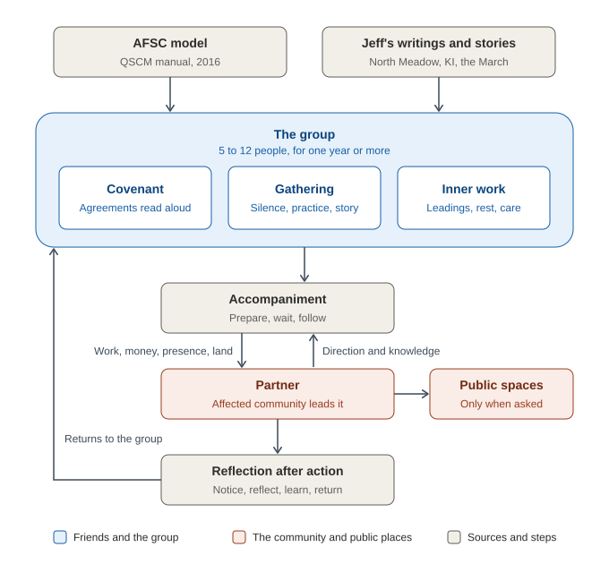

About This Manual
The sources of this manual
This manual uses the life and writing of Jeff Kisling. Jeff is a Friend. He grew up in Bear Creek Meeting, near Earlham, Iowa. He graduated from Scattergood Friends School in 1970.
For most of his adult life, Jeff lived in Indianapolis. He did research on infant lung disease and development. In Indianapolis, he was a member of North Meadow Circle of Friends. That meeting joined the Quaker Social Change Ministry pilot program of the American Friends Service Committee (AFSC). Through the program, the meeting made a long relationship with the Kheprw Institute, a Black youth community near the meetinghouse.
Later, Jeff worked for about three years with Ronnie James at Des Moines Mutual Aid. In 2018, he walked 94 miles on the First Nation-Farmer Climate Unity March. Now he is on the planning committee of the Decolonial Repair Network. Sikowis Nobiss and Eric Anglada started the network to support the Great Plains Action Society.
The model that this manual follows
The structure of this manual follows the 2016 Quaker Social Change Ministry manual. Greg Elliott wrote that manual for the AFSC Friends Relations program. It changed a model for Unitarian Universalist congregations, from Kelly Dignan, Kierstin Homblette and Deborah Holder.
This manual is not an AFSC document. It uses the structure of the AFSC model. It adds what Jeff and other Friends learned when they took spiritual practice outside the meetinghouse.
How we wrote this manual
An AI writing assistant helped to write this manual from Jeff's blog posts, letters, notes and books. Jeff's own words are in quotations. Each quotation shows the title and date of its source. All other text gives a summary of his writing or of the published sources in Appendix F.
To read Jeff's full words, go to his blog, Channels Into Knowledge (https://channelsintoknowledge.com/).
The language of this manual
This manual uses ASD-STE100 Simplified Technical English. Thus, the sentences are short and the instructions are numbered steps. The quotations from Jeff and from other people stay in their original words.
This manual uses one name for each thing. The table below gives the names.
| Name | Meaning in this manual |
|---|---|
| Friends | Members of the Religious Society of Friends. Other people call them Quakers. |
| Meeting | A local community of Friends, for example Bear Creek Meeting |
| Silent worship | The worship of Friends. People sit together in silence. Any person can speak a message. No person leads. |
| Silence | A time when a group stops talking and waits together. Silence can be short, and it can occur in any place. |
| Group | The small group that uses this manual: five to twelve people who meet regularly |
| Gathering | One session of the group |
| Partner | The community organization that the group accompanies. People from the community that has the injustice lead the partner. |
| Accompaniment | A long relationship with a partner, in which the group follows the direction of the partner |
| Practice | An activity that helps a person or a group to listen, rest and pay attention |
| Leading | A prompt to act that comes in silence or in daily life and does not go away |
| Query | A question that people think about in silence |
| Frontline activists | People who do hard work for justice in their own communities |
| Active objection | You refuse to take part in harm, and you help to repair it. This is Jeff's term. |
| Channel | A relationship that carries knowledge in two directions |
| The March | The First Nation-Farmer Climate Unity March, September 1 to 8, 2018 |
| The Hub | The Urban Resilience Hub of the Great Plains Action Society, in Iowa City |
Copies
You can copy, print and share this manual for groups, meetings, classes, mutual aid groups and training. Keep the names of the people in the stories. Do not sell the manual.
How to Use This Manual

This manual is for young adults who want to do justice work with a strong spiritual base. Some readers are Friends. Some readers belong to a different faith. Some readers have no faith. No part of this manual asks you to change your beliefs.
Three uses
Use 1: Study alone. Read one chapter each week. Write your answers to the queries in a journal. Try the practices in Chapter 7 alone before you try them with other people.
Use 2: Study as a group. Chapter 25 gives twelve sessions for a group of five to twelve people. The group meets each two weeks for about six months. Each session uses the gathering format in Chapter 11. You can copy the worksheets in Appendix A.
Use 3: Use it in the field. When your group accompanies a partner, use Parts Four and Five. Chapter 20 gives the procedure to offer a practice in a public place. Chapter 22 gives the questions to use after each action.
The parts of this manual
| Part | Contents |
|---|---|
| Part One: Foundations | Why this work is necessary now, why no faith is necessary, the Quaker Social Change Ministry model, and the Indianapolis story |
| Part Two: Inner Work | Silence, leadings, practices to share, and rest |
| Part Three: Forming Your Group | The group, the covenant, the gathering and stories |
| Part Four: Accompaniment | The meaning of accompaniment, how to prepare, how to find a partner, how to build trust, and practice scenarios |
| Part Five: Spirit in Public Spaces | Why silence can go into public places, stories, procedures, and active objection |
| Part Six: Action, Reflection and the Long Haul | Reflection after action, material support, how to continue for many years, and a twelve-session curriculum |
| Appendices | Worksheets, queries, scripts, glossary, a reader of Jeff's writings, and sources |
Symbols and formats
Indented italic text is a quotation. Usually the quotation is from Jeff. The line after it gives the source.
Queries are open questions. Read a query slowly, then keep silence. You do not have to answer a query aloud.
For facilitators
You do not have to be an expert, a Friend or an elder to lead a group. The facilitator keeps time, keeps the silence and makes sure that all people can speak. The roles in this model rotate.
- Read Chapter 11.
- Read the scripts in Appendix C.
- Start the first gathering.
Foundations
Why this work, who it is for, and where the model came from
Chapter 1. Why This Work Is Necessary Now
A question from a young person
In November 2026, Jeff wrote about a message from a seventeen-year-old. The teen was very afraid of climate change. The adults near the teen said that change was not possible. The teen was afraid that they would never grow up. They asked other people to tell how they continue to work while they feel this fear.
Jeff's answer started with grief.
What a spiritual tragedy it is that our youth are scared about their future.
"I'm a teen really scared for my future," Channels Into Knowledge, November 23, 2026
The next day, he wrote about his own generation.
As an older Quaker, I feel a sense of having let our youth down.
"Listening for Guidance: An Illustrated Book for Teens," Channels Into Knowledge, November 24, 2026
This manual is one answer to that teen. It does not say that all will be well. It gives practices that keep you steady. It shows how to join work that communities do now. It gives stories from people who did this work before you.
Fear and concern
Jeff makes a distinction between fear and concern. This distinction is the base of this manual.
Fear focuses on looking backward and inward, and asks 'how do I flee this danger?' Concern looks outward and forward and asks, 'what is the situation and what am I being led do about it?'
"I'm a teen really scared for my future," November 23, 2026
Fear is a natural response to real danger. But fear alone makes a person smaller. It puts all attention on self-protection, and often it stops action. Concern is fear that turns toward the world. Concern also feels the danger, but it asks a different question.
Friends use the word "concern" in a special way. A concern is a load on your heart about an injustice, and it calls you to act. Jeff learned to make this change at his Quaker high school.
It took years to realize that one of the greatest educational tools I received from Scattergood Friends School was to ask 'what does the situation ask of me?' We didn't ask whether we should do something. Instead, we learned how to assess the situation and figure out how we were going to try to set it right.
"I'm a teen really scared for my future," November 23, 2026
Why spiritual practice is part of justice work
Many people who work for justice do not trust religion. They have good reasons. Religious institutions supported war, slavery, the theft of land and the removal of children from their families. Friends are part of that history. Chapter 14 tells about it.
This manual gives three reasons to use spiritual practice in justice work.
Reason 1: Activists become too tired. Many activists work for years with no rest. Often they stop the work completely. Researchers found that many movements have a culture of self-sacrifice, in which rest feels like betrayal. A practice that lets tired people rest for one hour keeps them in the work.
Reason 2: Activists make mistakes when ego or anger controls them. Outsiders with good intentions did much harm when they brought their own solutions to communities. A practice that teaches people to wait, listen and accept correction helps to prevent that harm.
Reason 3: Many frontline communities have a deep spiritual life. Jeff found this at the Kheprw Institute, at Des Moines Mutual Aid, on the March and at the Great Plains Action Society. Outsiders with no spiritual base can miss what occurs in the room.
What Friends can give, and what Friends must learn
Jeff's recent writing compares knowledge to water in channels. When no person builds a channel to a dry field, the water does not get there. The water exists, but the channel does not.
But another piece of this recently came to me. That Quakers have a large body of experience and knowledge that others could benefit from. That many people seem to be searching for and not finding. Maintaining hope will be crucial in order to survive the unfolding chaos.
"Friendly Channels," Channels Into Knowledge, November 12, 2026
For many years, Jeff wrote about what Friends must learn from oppressed communities. He wrote especially about Native communities, because Friends are part of their history. In late 2026, he saw that a channel must carry knowledge in two directions. Friends have practices that frontline activists sometimes need and ask for. Examples are silence, discernment in community and the test of a leading.
The purpose is not to bring people into a meeting. The purpose is a true relationship. A relationship that carries value in one direction only is extraction.
Hope is a practice
In this manual, hope is not only a feeling. You can practice hope, and you can become better at it. Jeff learned this from a sermon by Quinn Norton.
Did you know that hope is something you can actually practice and get better at? I hadn't realized that until I read this sermon by Quinn Norton. Since then, I've often signed my email messages "practicing hope".
"Practicing Hope," Channels Into Knowledge, October 3, 2026
Jeff also wrote that many people do not look at injustice because they did not learn to practice hope yet. Each practice in this manual is a hope practice. Silence, stories, regular presence, true history and monthly gifts all act as if a better world is possible.
Queries
- What first made me care about justice? Was it a person, a place, a story or an event?
- When I think about the future, where do I feel fear, and where do I feel concern?
- What helps me when I am tired? What do I have that can help a different person?
- Did a person ever ask me to help in a way that I did not expect? What did I learn?
Chapter 2. No Faith Is Necessary
All people are welcome
This manual uses the words of Friends because Friends made the model. The stories also come from the life of a Friend. But you do not have to be a Friend, become a Friend or believe in God. People of all faiths and of no faith use these practices. The communities in this manual also include people of many faiths and of no faith.
Jeff wrote this clearly when he suggested the Quaker Social Change Ministry model for the Decolonial Repair Network. Most members of that network are not Friends.
Despite the name, people who are not people of faith will not find much religious content in the program.
"Expanded role for the Decolonial Repair Network," Active Objection, May 5, 2026
He also wrote what the model is about.
QSCM was designed to help Quaker meetings engage with an oppressed community near the meetinghouse. Most of QSCM is about how to engage with such communities before connecting with them. The key concept is accompaniment, which means taking direction from the community.
"Expanded role for the Decolonial Repair Network," May 5, 2026
Why silence can go to all places
The center of Friends' practice is silent worship. In silent worship, no person leads and any person can speak. This practice needs very little:
- It needs no clergy. All people are equal.
- It needs no building. Friends held silent worship on gravel roads, in banks, on courthouse steps, by telephone and online.
- It needs no creed. The people do not have to agree about what they wait for.
- It needs no money, no equipment and no sign-up form.
- It does not compete with the beliefs of other people. Silence does not argue with the prayer of any person.
The last item is very important in public places. In a crowd of many faiths, a spoken prayer from one faith can make the other people feel like guests. Silence holds grief, thanks and courage without the words of one group.
A Christian can hear "the still small voice" in the silence. A Buddhist can find "just sitting." A Muslim can find watchful waiting. A secular activist can find the moment of silence at a vigil, but longer.
Words of Friends in plain language
Use this table if the words of Friends are new to you. The left column gives the words of Friends. The right column gives one meaning in plain words. Each column shows the same experience in a different way.
| Words of Friends | One meaning in plain words |
|---|---|
| That of God in everyone | Each person has worth and can know what is true and good |
| The Inner Light, the Light | The part of you that knows what is true and right, below opinion and fear |
| Silent worship | A time of shared silence in which any person can speak |
| Expectant waiting | You sit quietly with full attention, and you are open to an idea that you did not plan |
| Leading | A strong feeling that you must do a thing, which does not go away |
| Discernment | A slow, careful test of a decision |
| Holding a person in the Light | You keep a person in careful thought or prayer. You do not tell them, or God, what must occur. |
| Clearness committee | A small group that helps a person with a decision. The group asks only honest, open questions. |
| Concern | A load on your heart about an injustice, which calls you to act |
| Testimony | A value that you live, for example peace, equality, simplicity, integrity, community and care for the earth |
| Gathered meeting | A time when the silence of a group becomes deep, and the people feel part of something larger |
For Friends
Friends can think that the plain words make a precious thing smaller. Chapter 18 gives this objection careful attention.
George Fox wrote about "answering that of God in everyone." He did not write "in Christians" or "in Friends." When you share a practice in a way that other people can join, you do not make it weaker. You build a channel.
Many young Friends grew up in meetings that are mostly white, mostly middle class and mostly comfortable. Your meeting possibly did not teach you how to be in a room that other people control. This manual asks you to learn as a student in places where you are not the host. It asks you to offer your practice only when people ask for it.
For people of other faiths
Many traditions wait in silence. Examples are the still small voice in the Hebrew scriptures, and the desert monks and centering prayer in Christian practice. Other examples are muraqaba in Sufi practice, zazen in Buddhism, mauna in Hindu tradition and silent remembrance in Sikh practice. The practices in Part Two can feel familiar to you.
Bring the wisdom of your tradition into your group. Ask your group to make room for it.
For people of no faith
You do not have to believe a thing to sit in silence with other people. You can listen carefully to a story, ask a friend an honest question or come each Saturday to a food distribution. You can think of all of this manual as human practices for attention, humility, rest and solidarity.
Many people who are not religious speak about "holding space," "grounding" and "a pause before a decision." Friends have practiced these things for more than 300 years.
A caution about borrowing
Jeff wrote this clearly.
I also know it is important for non-Native people to not copy Indigenous practices, which would be appropriation.
"Quaker spiritual practices shared with frontline movements," Channels Into Knowledge, November 21, 2026
This rule applies to all traditions. Give your own practice. Receive what other people choose to share. Do not take.
Queries
- What words do I use for the deepest things in my life? Which words make me uncomfortable, and why?
- Did I ever feel part of something larger in a group of people? What made that possible?
- Which practices from my own background help me pay attention?
Chapter 3. The Quaker Social Change Ministry Model
Where the model came from
In 2015, the Friends Relations program of the American Friends Service Committee (AFSC) started a pilot program. Its name was Quaker Social Change Ministry (QSCM).
Friends started AFSC in 1917. AFSC gave conscientious objectors a way to serve during the First World War. In 1947, AFSC received the Nobel Peace Prize for all Friends, together with the British Friends Service Council. Since then, AFSC has worked for peace and justice.
The new pilot program came from a model outside the Society of Friends. Three Unitarian Universalist ministers, Kelly Dignan, Kierstin Homblette and Deborah Holder, made the Small Group Social Justice Ministry model. Their model helped congregations do long, spirit-based justice work. AFSC staff changed it for Friends.
Lucy Duncan was then the Director of Friends Relations. Greg Elliott, the Friends Relations Associate, coordinated the program. In June 2016, Greg Elliott wrote the program manual with the help of staff and pilot participants.
Jeff wrote about the pilot in a letter to Iowa Friends.
AFSC created the QSCM pilot program last year and has five pilot groups currently enrolled in the program: Beacon Hill MM (Boston), Durham MM (Durham, NC), Central Philadelphia MM, Red Cedar MM (Lansing, MI), and North Meadow Circle of Friends (Indianapolis, IN).
Jeff Kisling, letter to Iowa Yearly Meeting (Conservative) and AFSC staff, 2016
AFSC continues to offer the program. AFSC says that QSCM combines Spirit and action, builds covenant relationships and puts the most affected communities at the center. The AFSC webinars teach the covenant, shared spiritual practice and worship, stories, and the tenets of accompaniment.
The three parts of the model
Jeff described the model in three parts in the same letter.
QSCM has three main parts. One is a framework for emphasizing the spiritual basis of our social justice work. The second is the concept of accompaniment, spending time with and working with people in communities impacted by injustice. Getting Friends out of the meetinghouse and into the community. And the third part is to strengthen the connection between Friends meetings doing this work, and AFSC, which is helpful in networking with other people, and for the many different resources AFSC has to offer.
Jeff Kisling, letter to Iowa Yearly Meeting (Conservative) and AFSC staff, 2016
Many groups are not meetings. For these groups, the third part has a wider meaning. Connect your group to a larger organization that has experience, staff and relationships. Examples are AFSC, a local mutual aid network, the Decolonial Repair Network or a faith-based organizing coalition.
The elements of the model
The model has seven elements. They work together.
| Element | Description |
|---|---|
| A small group | Five to twelve people meet regularly, usually monthly, for one year or more |
| A covenant | A short list of agreements about how the members treat each other. The group reads it aloud at each gathering. Chapter 10 tells how to write it. |
| A regular gathering | Each gathering has the same shape: covenant, silence, practice, story, reflection and business. Chapter 11 gives the format. |
| Roles that rotate | Different members facilitate, lead the practice and tell the story. No person becomes the permanent leader. |
| Stories | Each gathering has a recent, true story from a member's life. The group reflects on it. |
| Accompaniment | The group makes a long relationship with a partner and follows the direction of the partner. Part Four tells about it. |
| Reflection after action | After each action, the group meets to talk about what occurred, what they learned and how power showed itself |
The ten tenets of accompaniment
The 2016 AFSC manual gives ten tenets of accompaniment. This list gives them in short, plain words. The tenets ask you to:
- Build trust and accountability with the affected community through long presence.
- Know that the liberation of each person connects to the liberation of all people.
- Walk together across differences, with respect and trust.
- Struggle together, and support the spiritual growth of each other.
- Think about the gifts that you will receive, not about what you will give or repair.
- Stop the habits of dominance, for example the habit to take control.
- Ask for and offer support with empathy.
- Go from questions to action.
- Go out of your comfort zone, and let the experience change you.
- Disrupt unjust systems in true community, and follow the most affected people.
Most of these tenets are about the inner life of the person who accompanies. Only the last two are about action. Those two also ask you to follow, not to lead.
Why the model works
Jeff saw the model work in Indianapolis. He wrote about the result.
It is because QSCM has been so beneficial at North Meadow Friends, that I encourage all Friends meetings to embrace the program. Having a focus for our shared work has been truly invigorating. We have learned much more about each other and our social justice leadings and work.
Jeff Kisling, letter to Iowa Yearly Meeting (Conservative) and AFSC staff, 2016
He also saw a result that no person planned.
QSCM has also had the unanticipated effect of making the Quaker presence visible and felt in the Indianapolis social justice community. QSCM provides a mechanism for us to bring faith naturally into our conversations and work at KI.
Jeff Kisling, letter to Iowa Yearly Meeting (Conservative) and AFSC staff, 2016
This manual follows that idea: faith that comes naturally into conversation and work. Spiritual practice in public places is not preaching. It is the presence of people whose spiritual base shows. These people can offer silence or a careful question when it is necessary, and they know how to wait.
What this manual adds to the model
This manual keeps the center of the QSCM model. It adds three things:
- A clear welcome for people of no faith, with plain words for each practice.
- Procedures for public places and frontline places. These come from vigils, bank actions, the March, mutual aid sites and the Hub.
- Attention to history and to material repair. Jeff learned from Native communities that trust starts only when people tell the truth. He also learned that spiritual solidarity must become money, work or land.
Queries
- What does it mean to me to give one year to a small group?
- When did I try to help a person and then find that I was in the way?
- Which of the ten tenets is the most difficult for me? Which is the easiest?
Chapter 4. The Indianapolis Story: North Meadow Friends and the Kheprw Institute
This chapter tells the main story of this manual. Most of it is in Jeff's own words. The details are important, because the lessons are in the details.
A day of action at an old store
Jeff did much environmental organizing in Indianapolis. One day, a national climate group announced a day of action. Jeff looked for an event in Indiana.
Nearly four years ago 350.org was organizing one of those nationwide days to bring awareness to environmental concerns. When I looked to see where something was happening in Indiana that day, the only event was at a place I'd never heard of, Kheprw Institute. I arrived at their old location, a run-down former convenience store, to find a group of about a dozen smiling kids, eager to show us their environmental projects, including the aquaponics system they operate.
"North Meadow Circle of Friends and the Quaker Social Change Ministry Model," written for AFSC, 2016
The Kheprw Institute (KI) started when Diop Adisa was in high school. Diop spent one summer with his father, Imhotep, in place of summer school. After that summer, Imhotep and his wife, Pambana, continued to mentor Diop and his friends. Miss Fair and Alvin were also leaders of KI.
KI says that its mission is to make a more just, equitable and human-centered world. It helps youth and young adults become leaders, critical thinkers and doers. When Jeff knew KI, it had a web and media business, a rain barrel business, compost, gardens and a large aquaponics system. KI was also a place for open, respectful talks about social justice. Often, young interns led these talks.
The environmental work brought Jeff to KI. But he also brought a question that he carried for a long time.
I had long been thinking about what I could do about racial injustice, and the privileges of people who consider themselves white. This is a moral dilemma for me. I was convinced that the only way I would really begin to understand this would be from personal relationships.
"North Meadow Circle of Friends and the Quaker Social Change Ministry Model," 2016
The second email
The KI website showed a project with the name Open Source Activism. In this project, people wrote software for activism. Jeff was a computer programmer, so he sent an email to offer help. No person answered.
I was thinking this was not meant to be, but this was one of those times when the Inner Light was not going to let me give up, so after a couple of weeks, I sent another email message. After some time, I received an offer to meet at KI.
"What I Have Learned About Racism," Jeff Kisling
This small event is important. Often, a leading continues after the first problem. It is also important that Jeff did not come without an invitation. He asked, he waited, he asked again, and he came when KI invited him.
"Tell us about yourself"
I arrived on my bicycle on a dark, rainy evening, to find the same group of about a dozen kids in their early to late teens, and KI's leaders, Imhotep, Pambana, Miss Fair, and Alvin. After some greetings, we all sat down, and I thought we would talk about programming languages and projects. Instead everyone looked at me, and Imhotep said, "Tell us about yourself."
"What I Have Learned About Racism"
Jeff told them about the environment, his work at Riley Children's Hospital, and his faith as a Friend. Miss Fair talked with enthusiasm about Friends and the Underground Railroad. Jeff said that he was thankful for that work of his ancestors. But he also said that Friends try not to take credit for things that they did not do.
Jeff told how he lived in the city without a car for many years because of his concern for the environment. Imhotep smiled and called him a warrior. Then Imhotep asked him to say more.
I finally realized, and should have anticipated, that this was actually an interview to see if I was going to fit in, and the usual surface information wasn't going to be adequate. I remember everyone looking expectantly at me, and I wondered what to say next. I also clearly remember the Inner Light telling me what I needed to do then. I said "Quakers believe there is that of God in everyone" and I turned to each person and said "that includes you, and you…"
"What I Have Learned About Racism"
The first time, I think I hesitated slightly as I was asking myself, "Ok, we Friends always say this, but do you really believe this of a group that is different from you?" And I'm really glad the answer was an immediate and emphatic YES, but it also seemed to reaffirm that by exploring it intentionally. At that point I remember smiling at the thought, and the young person whose eyes I was looking into saw it, too, I think. Each person smiled at me as I said that to them, and I had the impression they were thinking, "of course". I strongly felt the presence of the Spirit among us.
"What I Have Learned About Racism"
Jeff learned a lesson that night. This lesson applies directly to spiritual practice in public places.
This was a real revelation to me, how it is important to express spiritual matters as well as you are able when the situation calls for it. (It is also important NOT to do so when the situation does not call for it.)
"What I Have Learned About Racism"
Ferguson, Indy10 and a monthly group
In August 2014, a police officer killed Michael Brown in Ferguson, Missouri. In Indianapolis, ten young people used social media to start a group for racial justice. They called the group Indy10. Two of them went to North Meadow. The group met often that autumn. Then, tension and conflict broke the group apart.
Those from North Meadow were pretty deeply affected by what happened, and JT and Evalyn invited us to meet at their home to discuss this. The meeting was helpful, and we continued to meet monthly.
"North Meadow Circle of Friends and the Quaker Social Change Ministry Model," 2016
Then these Friends learned about the AFSC pilot program. They saw that it was similar to their own monthly group.
So last year, when we heard about the new model the American Friends Service Committee (AFSC) was piloting, Quaker Social Change Ministry (QSCM), we recognized that was a more extensive version of the monthly meetings we had been having. We talked about it in our original small group, and then we talked to the meeting about it, and decided to participate. Greg Elliott and Lucy Duncan helped us get started, and all along the way.
"North Meadow Circle of Friends and the Quaker Social Change Ministry Model," 2016
Jeff's notes give the sequence:
| Date | Event |
|---|---|
| May 14, 2015 | A conference call about QSCM |
| May 28, 2015 | The first North Meadow group meeting about QSCM |
| October 20, 2015 | A joint meeting of North Meadow Friends and KI about QSCM |
The first gathering
Sixteen or seventeen Friends showed up for our first QSCM meeting. After a spiritual practice, one of us shared a story. Then someone else shared theirs. And another, and another, until every person present told a story. That hadn't been the plan, but it worked for us, even though it took a couple of hours.
"North Meadow Circle of Friends and the Quaker Social Change Ministry Model," 2016
After that, usually about twelve Friends came, and about eight came each time. The format stayed the same: a spiritual practice, a story, and reflection on the story from a spiritual point of view.
The notes of one 2016 gathering show the shape. After silence, a member read the Friendly Agreement of the group. A different member led a breathing practice. Then the group talked about its growing relationship with KI.
The most difficult part: waiting
It has taken people a while to develop a better understand of what QSCM means to them, the meeting, and KI. The hardest part seems to be getting used to the concept of accompaniment, and how it at first seems like we "aren't doing anything" during the relatively long time we've waited to hear from KI what they could use from us.
"North Meadow Circle of Friends and the Quaker Social Change Ministry Model," 2016
At the joint meeting at KI, North Meadow Friends explained the model. They wanted KI to know their purpose.
I think Pambana summed it up when she said "we aren't used to people asking us what they can do to help." But it was good for so many from North Meadow to be at KI, many for the first time, and to have this combined discussion. We didn't leave with any specific plans.
"North Meadow Circle of Friends and the Quaker Social Change Ministry Model," 2016
No added load for the partner
One of our main goals was to make sure we weren't an added burden to KI's thinly stretched resources of time and energy. Fortunately an opportunity for meaningful engagement without doing so was immediately available.
"North Meadow Circle of Friends and the Quaker Social Change Ministry Model," 2016
That opportunity was the monthly book discussion at KI, on the third Sunday of each month. KI invited Friends to come. Each month, three or more Friends went. Often they rode bicycles together from the meetinghouse to KI.
Although the book being discussed provided the context, these were really opportunities for those present to tell their stories related to the issues the books raised. Imhotep especially has the great ability to keep the discussion both focused and respectful. People work very hard to listen carefully to what each other are saying.
"North Meadow Circle of Friends and the Quaker Social Change Ministry Model," 2016
Jeff later wrote that these discussions felt like worship sharing. People listened, let silence come and told their own stories. The practice did its spiritual work, and no person gave it a Friends' name. Imhotep often said that people do not value conversation enough. One month, he looked around the room and said that introductions were not necessary, because all the people knew each other.
One beloved community
Although it seems on the surface that not a lot has happened, our two communities have really started to get to know each other and care for one another, and that is probably the most important thing that could have happened. We are creating one Beloved community, rather than having two separate communities working together.
"North Meadow Circle of Friends and the Quaker Social Change Ministry Model," 2016
The relationship grew in many small ways:
- A Friend helped with construction projects.
- A Friend and Miss Fair told each other stories about their grandchildren.
- North Meadow Friends and KI helped to start Indiana Moral Mondays together.
- They marched together in the Pride Parade after the Indiana Religious Freedom Restoration Act.
- Jeff taught photography classes in the KI summer school.
- KI let Jeff's environmental group hold a community discussion about civil disobedience.
- Friends signed a card for a young man who received a place at a university. He gave Jeff a big hug.
- KI started a Community Controlled Food Initiative after the main inner-city grocery stores closed. More Friends found ways to help.
When Jeff left Indianapolis, he told his friends at KI that they gave him a graduate degree. Alvin said that the diploma was in the mail. About ten years later, Miss Fair spoke at the online memorial service for Jeff's mother. She said that she did not know his mother, but she knew Jeff. She said that she saw how he paid attention to the spirit. She said: "he listened."
What Jeff learned about racism
Jeff wrote about these years. His essay gives a principle and a sentence for all groups that accompany a partner.
The crucial, essential first step for a white person is to find some way, anyway, to develop friendships with people of color. Not (just) attend meetings and vigils, but become friends.
"What I Have Learned About Racism"
It is by sharing our lives and our stories with each other that a way forward together is revealed to us.
"What I Have Learned About Racism"
Lessons for your group
- Go to places where people meet now. North Meadow did not start a program. Friends went to events that KI held.
- Expect an interview. Communities that outsiders hurt have the right to learn who you are.
- Accept the waiting as part of the work. Months with no task do not mean failure.
- Do not give the partner more work. Ask what is necessary, and accept "nothing now" as an answer.
- Bring all of your skills. Jeff's photography, software and bicycle became part of the relationship.
- Let the relationship become friendship. The goal is one community, not a successful project.
Queries
- Near me, where do people meet now to work on the things that I care about? Did I go there?
- If a person said, "Tell us about yourself," what would I say below the surface?
- How do I feel about months of presence with no clear task?
Inner Work
Silence, leadings, practices, and rest
Chapter 5. Silence
What occurs in silent worship
On Sunday morning at Bear Creek Meeting, near Earlham, Iowa, some Friends go into a plain meetinghouse. They sit on wooden benches and stop talking. No person stands at the front. No person reads a sermon or starts a song. For about one hour, the people wait together in silence.
Sometimes one person stands and speaks a few sentences. Often no person speaks. At the end, two people shake hands. Then all the people shake hands, and the meeting stops.
Jeff describes silent worship in this way.
Worshipping together sometimes leads someone to speak into the silence if they hear a spiritual message. Anyone can give such a message. On a given Sunday several people might be led to speak. Other times no one does.
"Walk Cheerfully Over the World," Active Objection, May 31, 2026
A new visitor can think that nothing occurred. It is better to think of the hour as a practice, like the scales that a musician plays. In the hour, people practice a skill that modern life seldom teaches. They sit still with other people and wait. They receive something that they did not make, and they speak only when something moves them.
Settling and expectant waiting
At the start of the hour, the mind is usually full of worries and plans. Friends call the slow quieting of the mind "settling" or "centering down." Settling is only the start. Below it, Friends find "expectant waiting."
Each of the two words gives protection from a mistake. "Waiting" gives protection from forcing an answer. "Expectant" gives protection from an empty hour, for example a nap or a time to make plans.
Jeff uses the same words for his practice before he writes each day.
Each morning I sit quietly, trying to discern what I should write about that day. It is definitely a spiritual practice. Even though I usually have a general idea, a long range plan, I usually don't know specifically what I will write that day. The most difficulty I have is waiting to hear what I should write.
"Leadings continued," Channels Into Knowledge, August 30, 2026
It is surprising that I do get an answer almost every day. This is sometimes referred to as expectant waiting. That concept also applies to what people who come to Quaker meeting try to do, as a group.
"Leadings continued," August 30, 2026
Sensing together
Silence with other people is different from silence alone. Jeff uses a term from Theory U, a method from Otto Scharmer. Many business schools, government agencies and nonprofit groups use this method. The term is "co-sensing." A group sits in expectant quiet and tries to sense together what wants to come.
Sometimes Friends call a meeting "gathered." The silence changes. The people stop being separate listeners and become one group that listens. No person can make this occur. It is one reason that people come back.
In 1676, the Scottish Friend Robert Barclay described his first silent worship.
For when I came into the silent assemblies of God's people, I felt a secret power among them, which touched my heart; and as I gave way unto it, I found the evil weakening in me, and the good raised up.
Robert Barclay, Apology for the True Christian Divinity, 1676
Barclay did not learn a doctrine. Something touched him. Something in him became weaker, and something good became stronger. That is a description of healing. Thus, this manual gives silence to people who do hard work.
Many traditions wait in silence
Friends did not invent silent waiting. They found it again and gave it a new place.
| Tradition | Example of silent waiting |
|---|---|
| Hebrew scriptures | The tired prophet Elijah heard God in "a still small voice" (1 Kings 19:12). The Psalms say, "Be still, and know that I am God" (Psalm 46:10). |
| Hebrew scriptures | Isaiah wrote to a people in exile: "they that wait upon the LORD shall renew their strength" (Isaiah 40:31). |
| Christian practice | Desert monks, Benedictines and Trappists keep silence each day. In the 1970s, Trappist monks made centering prayer for people who live in the world. |
| Christian practice | At Taizé in France, a long silence is the center of prayer. Young people from many countries go there. |
| Islam | Sufi teachers use muraqaba. The word means to watch and to wait. |
| Buddhism | Zen students sit in zazen. Thich Nhat Hanh taught mindfulness to activists, because many activists were too tired to continue. |
| Hindu tradition | Mohandas Gandhi kept one day of silence each week during political struggle. |
| Secular life | Many countries keep two minutes of silence on November 11. People first kept it in 1919. |
Friends made one change. They made a long, shared silence with no script the full form of worship. They also added one rule: any person can speak, and no person leads.
Listening continues after the hour
It is important to explain that Quaker worship is not confined to this hour of worship on Sunday mornings. We believe we should listen for spiritual guidance always.
"Walk Cheerfully Over the World," May 31, 2026
The hour on Sunday is the training. The practice continues all week. Go slowly, look at what is in front of you, and do not decide in advance what you will see. Jeff uses this practice when he writes each morning, when he walks with his camera, and when he works at mutual aid sites.
Practice: A first silence alone
Time: 10 minutes.
- Sit in a chair with your feet on the floor.
- Set a quiet timer for ten minutes.
- Close your eyes, or look down.
- For the first minutes, notice the noise in your mind. Do not fight it.
- When you notice a plan or a worry, bring your attention back to your breath.
- In the second half, ask silently: "Is there something I must know today?"
- Wait. Do not try to make an answer.
- When the timer sounds, write one sentence about what you noticed.
Practice: A first silence together
Time: 15 to 20 minutes.
- Sit in a circle.
- Tell the group how long the silence will continue and how it will stop.
- Start the silence.
- Let any person who feels moved speak a short message.
- After a message, go back to the silence. Do not answer the message.
- At the end, shake hands with the person next to you.
- Let all people shake hands.
Usual problems
| Problem | Answer |
|---|---|
| "My mind does not stop." | Almost no mind stops. The practice is to come back, not to make the mind empty. |
| "I fell asleep." | Possibly you are tired. That is useful information. Next time, sit straight or use a shorter silence. |
| "A person spoke, and I did not agree." | Friends do not argue about messages. Let the words go through you. Ask if there is something in them for you. |
| "Nothing occurred." | Many meetings are quiet. The waiting is the practice. After weeks or months, many people find that something changed. |
| "It feels too religious." | You can use the silence only for attention and rest. Many people do. |
Queries
- When was I in a silence that felt full, not empty?
- What usually fills the quiet times of my day? What can occur if I leave some of them empty?
- Is there a place near me where I can sit in silence one time each week?
Chapter 6. Leadings and How to Test Them
What a leading is
In silence, Friends hope to receive a leading. A leading is a feeling that you must do a thing. Jeff does not call all decisions leadings.
I wondered if you might think that I was trivializing what a leading is. Do I consider any decision I make a leading? No, I do not.
"Leadings continued," August 30, 2026
In the same post, he gives four parts of a leading. Each part removes a thing that is not a leading.
Four clauses about leadings, and each rules something out.
Arrives rather than being reasoned to rules out the good idea.
Something you had no way of knowing you wanted rules out the preference.
Requiring something you would not have chosen rules out the convenient.
Persisting until it is obeyed or refused rules out the passing impulse.
"Leadings continued," August 30, 2026
Thus, a leading is not a strategy, a plan or a mood. It comes to you. It surprises you. It asks something difficult of you.
It does not go away. Many activists know this experience but do not have a word for it. Friends give the word, and Friends give a method to test it in community.
You can make conditions for a leading
And points out something about leadings. You can create the conditions that make it more likely to "hear" a spiritual message, or a leading. A quiet space is important. Not that a leading can't occur in the middle of noise or chaos because that can happen.
"Leadings continued," August 30, 2026
Practice over time can make it easier to come into the silence and be attentive to what the Spirit might be saying, what leading might appear.
"Leadings continued," August 30, 2026
A series of small steps
Jeff's grandmother gave him words that he uses often.
My grandmother, Lorene Standing, said "the will of God is often revealed in a series of small steps."
"What is your spark?," Channels Into Knowledge, November 14, 2026
Most leadings are not large. The second email to KI was a small step. Other small steps were a bicycle ride to a book discussion and a visit to a vigil. A question to a mutual aid group about help on Saturday was also a small step. Each small step opens the next step. In Indianapolis, the usual question for Jeff became: "What do we do now?"
Your spark
In November 2026, Jeff asked his readers about their "spark." A spark is the first thing that brings a person to work across a boundary. A spark also keeps the person in the work for many years.
Building a channel to knowledge often presents challenges. Often multiple challenges over a significant amount of time. You usually have to invest significant personal resources of many kinds. Where does the spark come from that triggers and helps sustain your passion to do this work over the long haul?
"What is your spark?," November 14, 2026
Jeff found that each spark had an earlier spark. In 1968, he made a photograph of Longs Peak in Rocky Mountain National Park. In 1971, he moved to Indianapolis and saw the bad air over the city. He had a vision of mountains that smog hid. That vision was so strong that he lived without a car for all his adult life in Indianapolis. Before that spark, there was a spiritual experience at about age ten, in the Bear Creek meetinghouse.
That experience was the beginning of my channel into spirituality. That channel has grown during my life. I attempted to be guided by it in every significant choice I was led to make. It provides the sparks.
"What is your spark?," November 14, 2026
Your spark is probably going to be different from mine. What is important is that you pay attention to your spark. It might not be very bright, or last very long, so you have to be paying attention.
"What is your spark?," November 14, 2026
Practice: Your spark chain
Time: 20 minutes.
- At the bottom of a page, write the last thing that moved you to act for justice.
- Ask: "What made me ready to feel this?"
- Write the answer above the first line.
- Ask the question again, and write the new answer above.
- Continue until you get to an early time in your life.
- Look at the chain. Find the people, places and times of silence in it.
- Tell one part of the chain to a partner.
Appendix A has a worksheet for this practice. Jeff's interactive version, "What's Your Spark?", is at https://kislingjeff-oss.github.io/WhatsYourSpark/.
A leading can be wrong
It is important to explain the spirituality my sparks come from. Because decisions that are spirit led sometimes don't make sense, logically. Sometimes we don't fully understand a spiritual leading, but subsequent events reveal the leading's purpose. Going ahead and following your leading despite your concerns can be an act of faith. There is potential for error. You might not be getting the message accurately.
"What is your spark?," November 14, 2026
Jeff also found a less clear error. He changed spiritual messages to fit what he already believed.
One important thing I realized was I often translated what I was hearing into my existing world view. Since that view was flawed (for example, related to privilege), I was often corrupting the message. I began to learn to trust what I was hearing and stop making it conform to what I thought I knew.
"What I Have Learned About Racism"
Three false leadings
Jeff's book for teens, Listening for Guidance, gives three false leadings.
| False leading | Description |
|---|---|
| Manufacture | You decide to have a leading because you want to be a person who has leadings |
| Promotion | The "leading" tells other people to change, but asks nothing of you |
| Excuse | You say "I do not feel led" to refuse a request from people you know |
How to test a leading
- Wait. A true leading continues over time. An impulse goes away in a week.
- Compare it with honesty, love and nonviolence. Make sure that it asks something of you.
- Look at the results over time. A true leading makes you more humble and more connected.
- Tell people you trust about it.
- Ask for a clearness committee. Chapter 7 tells how to hold one.
- If the leading involves a different community, ask if that community wants it.
Example: Jeff's draft decision
Jeff tested his decision about the draft for more than two years. He wanted to give his family time to accept his choice. He registered for the draft on November 26, 1969. He sent his draft certificate back on January 2, 1970. On February 6, 1972, he stopped all contact with the Selective Service System by letter. Chapter 21 tells more of this story.
First wait, then act
In 1971, Jeff was nineteen. He worked at the Friends Volunteer Service Mission in Indianapolis. He wrote about the task of Friends. First, they wait until God shows them how to use their abilities. Then they do what God shows. First wait.
Then act. The silence is not an escape from action. Correct action starts in the silence.
Queries
- Did I ever feel that I must do a thing, and the feeling did not go away? What did I do?
- Which of the three false leadings is a risk for me?
- Who in my life can help me test a leading?
Chapter 7. Practices to Share
This chapter gives practices for you, for your group, and for public places when people ask for them. Each practice gives the time and the steps. No practice needs Friends to take part. No practice uses the ceremonies of a different community.
Practice 1: Centering breath
Time: 3 to 5 minutes. Use it at the start of a gathering, with a tense group, or at the start of an action.
- Ask all people to sit or stand comfortably.
- Ask them to notice their breath. Do not ask them to change it.
- After one minute, ask them to breathe out more slowly.
- After one more minute, let all people rest in the quiet.
- Stop with a quiet "thank you."
Words for a mixed group: "We will use three minutes to arrive. You do not have to believe anything. Only breathe and notice."
Practice 2: A short silence with new people
Time: 2 to 10 minutes. Use it at rallies, at vigils, at the end of a work day, or in times of grief.
- Tell the group how many minutes the silence will continue.
- Say: "You do not have to believe anything or do anything. Only be here."
- Say: "If something comes to you for all of us, say it briefly."
- Say: "After a person speaks, we go back to the silence."
- Say: "At the end, I will shake hands with the person next to me."
- Start the silence.
- At the end of the time, shake hands with the person next to you.
A clear end is important. Tired or anxious people must know that the silence will stop.
Practice 3: Hold people in the Light, and tell them
Time: any. Use it to support people who do hard work far from you.
During the March, Friends who could not walk 94 miles held the marchers in the Light. Each morning, Jeff told the marchers about the prayers. Native and non-Native marchers were thankful. Support that people know about gives more strength. Hidden support cannot give strength.
- Choose one person or group that does hard work for justice.
- Keep them in your attention or prayer for a few minutes each day this week.
- Tell them: "I keep you in my thoughts and prayers this week."
Practice 4: A worship call or group chat
Time: 15 to 30 minutes each day during a campaign. Use it for supporters who cannot be present.
During the March, a Friend in Minneapolis named Liz started a worship call each morning from 8:30 to 9:00. She also started an online group for prayers and questions. One morning, Liz said that the call was a small thing. Jeff told her, "No, no it's not." The call needed one person, half an hour and a telephone line.
- Choose a time each day.
- Send the telephone number or link to the supporters.
- Start with silence.
- Let people speak prayers or thoughts briefly.
- Tell the frontline activists that the call occurs.
Practice 5: Worship sharing
Time: 20 to 45 minutes. Use it with tired groups, at the end of a day, or with mixed groups.
- Give the group one question.
- Keep silence for a few minutes.
- Let each person speak in turn from his or her own experience.
- Tell the group not to answer, argue or give advice.
- Keep silence after each person.
- Shake hands at the end.
These questions are good for frontline places:
- What do you carry today that you want to put down for a time?
- Where did you see something good grow in this work?
- What do you think you must do now, and what do you need for it?
- Who held you up this week?
Practice 6: Queries
Time: 5 to 30 minutes. Use queries in study groups, to examine your life, or to start a difficult conversation.
A query is an open question. A query does not tell you what to decide. Jeff wrote queries about harm to the environment and about racial capitalism. He also used the queries of Iowa Yearly Meeting (Conservative) to talk about mutual aid. Appendix B has a collection.
- Read the query slowly and aloud.
- Keep silence.
- Speak only if you feel moved.
Practice 7: Silent walking
Time: 20 minutes to one day. Use it on marches, walks of witness and memorials.
On October 15, 1969, students and teachers from Scattergood walked twelve miles to Iowa City for the Vietnam Moratorium. They walked in silence. Their handout asked other walkers to accept insults in silence too. Jeff remembers the walk as "like a moving prayer, or meeting for worship."
- Ask the organizers if they want a silent walk.
- Tell the walkers where the silence starts and stops.
- Walk in silence.
- At the end, stand in a circle for one minute.
Practice 8: Attention with a camera or notebook
Time: 30 to 90 minutes. Use it alone, or when you document an event.
Friends call a business meeting "meeting for worship with attention to business." Jeff uses the same idea for his walks with a camera. He calls them "meeting for worship with attention to photography."
- Walk slowly and in silence.
- Listen for where to look.
- When a scene is complex, stop and wait.
- Ask permission before you photograph a person.
- Write one sentence about what you saw.
Practice 9: Expectant writing
Time: 15 to 30 minutes each day. Use it for a journal, for discernment, or before you write.
- Sit in silence before you write.
- Wait until you know what to write.
- Do not force it.
- Write.
Jeff found that force seldom gives good results, and that an answer almost always comes. Writing by hand can help you go slowly. In April 2026, after a difficult time, Jeff started to write by hand again to go more slowly.
Practice 10: Clearness circle
Time: 1.5 to 2 hours. Use it for a person with a difficult decision.
- Let the focus person ask four to six trusted people to sit with them.
- Let the focus person describe the decision briefly.
- Ask only honest, open questions. These are questions to which you cannot know the answer.
- Do not give advice, suggestions, reassurance or stories about yourself.
- Keep silence after each answer.
- In the last fifteen minutes, with permission, tell the focus person words that you heard from them.
- Stop on time.
- Keep all of it confidential.
The Friend Parker Palmer changed the clearness committee for teachers and many other people. Many people who never go to silent worship use it. Activists answer the questions of other people all day. For them, an evening of open questions can give deep rest.
Practice 11: Care circle
Time: weeks or months. Use it for a person in crisis.
A care circle is a small group that stays with a person in difficulty. It does not repair or advise. It helps the person stay connected to the community. Chapter 8 tells how a care committee helped Jeff.
- Ask two to four people to make a care circle.
- Agree how often you will make contact, for example one time each week.
- Listen. Do not give advice.
- Continue until the person is ready to go back to the community.
Practice 12: Practice hope with a partner
Time: 30 to 60 minutes. Use it with a pair of different ages.
Jeff made an interactive guide, "Practicing Hope," from the sermon of Quinn Norton. He asked older and younger Friends to use it together. The guide is at https://kislingjeff-oss.github.io/PracticingHope/.
- Make a pair: one person below thirty and one person above sixty.
- Let each person answer: "What gives me hope now?"
- Let each person answer: "What did I practice, possibly without knowing it, that kept my hope alive?"
- Use the guide together.
Practice 13: Write an epistle
Time: one afternoon. Use it when a group wants to speak in public together.
For hundreds of years, Friends wrote epistles. An epistle is a formal letter to other Friends or to the world. Jeff used an older epistle about military conscription as a model for his "Epistle to Friends Regarding Community, Mutual Aid and LANDBACK." Appendix E has Jeff's epistle.
- Choose a concern that the group shares.
- Choose the readers, for example your school, congregation or city.
- Write the letter together.
- At the end, write what the group will do.
Practice 14: Quiet presence
Time: as long as the hosts ask. Use it at ceremonies, memorials and gatherings that other people lead.
Sometimes the practice is only to come and be still. Chapter 19 tells how Jeff and members of West Branch Friends were present when the family of Grace Yellowhair held ceremonies at her grave.
- Go only when the hosts invite you.
- Stay still.
- Do what the hosts ask.
- Do not make the event about yourself.
Practices for each place
| Place | Practices |
|---|---|
| Your daily life | First silence, expectant writing, attention practice, holding in the Light |
| Your group | Centering breath, silence, worship sharing, queries, stories, clearness circle |
| An event of a partner, when invited | Quiet presence. A short silence only when people ask for it. |
| A march or long campaign | Short silence, silent walking, a worship call for supporters |
| A mutual aid site or work week | Worship sharing at the end of the day, if the hosts want it |
| A person in crisis | Care circle, clearness circle, holding in the Light |
Queries
- Which of these practices do I do now, possibly with a different name?
- Which practice can I try this week?
- Which practice can I offer to a different person if they ask?
Chapter 8. Rest and Healing
The cost of the work
Frontline work makes people tired. This is not a moral failure. It is the result of grief, danger and the needs of other people over many years. Often activists get no pay, and often other people attack them.
Researchers studied burnout in justice activists. They found that depression and hopelessness increase over time. They found that some movements have a culture of martyrdom and do not give attention to the health of their people. They also found that activists can feel like a "sellout" when they rest. People continue until they cannot continue, and then they leave.
Healing is part of justice
Frontline communities know this. In 2005, Black feminist healers and organizers in the southern United States started to develop "healing justice." Healing justice says that healing belongs to the whole community. It is not a private reward for people with money. It is political, and it is part of the work.
At the Hub, one building has the name Healing Justice House. Jeff worked on this building during work weeks, sometimes in very cold weather. The name tells Friends something important: Indigenous-led movements know that healing and justice go together. The question for outsiders is this: do we have something to give when the movement asks, and will we give it without taking?
Jeff's crisis and return
Jeff knows this cost from his own life. At the end of November 2025, he stayed at Scattergood during a work week at the Hub. People found a time capsule in the old boys' dormitory. It held notes from his own class of 1970.
He did not sleep well. He asked himself what to do with the weight of what he knew about the history of Friends. In early December, he stopped writing his blog for a time.
This led to a spiritual crisis last December during which I could not attend meeting for several months. A care committee for me was helpful, and I returned to the meeting.
"Journal 4/21/2026," Active Objection, April 21, 2026
Part of the pain came from a difference between two communities. At the Hub, people came because the work needed them. In his own Quaker community, few people felt connected to that work yet. Jeff practiced silent waiting for more than fifty years. But his own tiredness had to remind him to go back to it.
This story gives three lessons:
- Experienced people also become too tired.
- A small group that stays with a person can help the person come back.
- The practices in this manual are not a vaccine that you get one time. You must go back to them again and again.
Young people today
Young adults see climate dread, authoritarianism and systems that fail. Many of them look for spiritual ground. Usually, religious institutions do not give them a door that they can see. Many young people do not want polite committees or comfortable doctrine. They want spiritual courage and a way for communities to survive together.
Many young people do the most difficult work now. At the Hub, Jeff saw that most volunteers were young people with a strong drive for justice. During a rest from hard physical work, one young volunteer looked at the group and spoke slowly:
The future will need places like… this Hub, and people like… us, to do it.
A young volunteer at the Hub, quoted in "Leadings continued," August 30, 2026
These young people do not need more commitment. Many of them need a practice that can hold their commitment for many decades.
Rest that is not escape
Some activists think that spiritual practice is an escape from the struggle. Sometimes it is. This manual does not recommend a practice that makes people calm about injustice.
Silence is different because it expects to send people out. The silence leads to a leading. A leading does not go away until a person obeys it or refuses it. The rest that silence gives is the rest of Isaiah: new strength to run and not be weary.
Practice: Make a plan before you need it
- Write your first signs of tiredness.
- Write the practice that you will do each day, for five minutes or more.
- Write the names of two people that you will tell when you have problems.
- Write one thing that you will stop when you have too much work.
- Write one thing that gives you rest and is not part of the work.
- Tell your plan to one person in your group.
Appendix A has a worksheet for this plan.
Procedure: Put care into the structure of the group
- Write an agreement about rest in your covenant.
- Use the check-in at each gathering for honest answers.
- When a member is in crisis, make a care circle quickly.
- Say no to secondary requests, so that the main work can continue. Chapter 24 tells about pace.
- If a partner asks for support for tired organizers, offer a clearness circle, worship sharing or quiet presence.
Queries
- When did rest send me back to the work with more strength?
- Where do I feel that rest is betrayal? Where did I learn that?
- Who will see it if I become too tired? Did I tell them what to look for?
Forming Your Group
The group, the covenant, the gathering, and stories
Chapter 9. Start a Group
Why a small group
People who do justice work alone often become too tired. A large committee often becomes only meetings. The QSCM model uses a group between these two. The members know each other well, meet regularly and keep each other accountable for the inner work and the outer work.
AFSC calls the group a home base. Members go from it into the world. They come back to it for reflection, discussion and new strength.
Who can be in the group
A group can start inside a meeting, a congregation of a different faith or a campus ministry. It can also start in a mutual aid network, a student organization or a group of friends. A group can also have no institution. Membership in an institution is not important. The commitments below are important.
Use five to twelve people. Different ages make a group stronger. If all members are young adults, invite one or two older people who did this work before. Ask them to listen more than they speak.
If all members are older, find young adults and give them real power. Jeff often writes about channels between generations. Many stories in this manual come from old and young people who worked together.
Commitments for each member
- Come to gatherings regularly, usually monthly, for one year or more.
- Keep the covenant of the group.
- Do each role in turn.
- Keep a personal practice between gatherings.
- Learn the history and the present facts of the injustice that the group works on.
- Go regularly to the partner when the relationship starts.
- Keep confidences.
Roles
The roles rotate. Thus, all members share the leadership, and no person becomes the permanent center. The AFSC manual divides each gathering into two parts. Each part has different roles.
| Role | Tasks | Rotation |
|---|---|---|
| Coordinator (1 or 2 people) | Keeps the calendar and the contact list. Talks with any larger organization. Notices who is absent. | Stays the same for one year |
| Facilitator | Keeps time. Starts and stops the silence. Guides reflection. Makes sure that all people can speak. | Changes at each gathering, or two people share it |
| Practice leader | Brings and leads a practice of 10 to 15 minutes | Changes at each gathering |
| Storyteller | Prepares and tells a recent, true story about the concern of the group | Changes at each gathering |
| Note-taker | Writes decisions and action items in the business part | Changes |
| Researchers | One or two people who learn about local organizations, history or campaigns | When necessary |
Procedure: Start a group
- Talk with two or three people about why you want to start.
- Choose a general concern, for example racial justice, Indigenous sovereignty, housing, immigration or climate.
- Invite other people personally. Do not use only a flyer.
- Find a regular time and an accessible place.
- Choose a coordinator.
- Agree to read Chapters 1 to 8 of this manual together.
- Tell your meeting, congregation or network what you will do.
- Ask your meeting, congregation or network for its support.
- Set the dates of the first three gatherings.
- Agree to write a covenant at the first or second gathering.
Groups that are not Friends
If your group has many faiths or no faith, talk early about spiritual words. One method works well. Each practice leader offers a practice from his or her own tradition, or from no tradition. The practice leader explains it in plain words that all people can understand. Over one year, the group learns from many traditions, and no member has to accept them. Silence stays the common ground, because it belongs to no person and is available to all people.
Stay connected to the larger community
The QSCM model asks a group in a meeting to stay connected to the full meeting. Thus, the work does not become a separate committee that other Friends can forget. Before North Meadow joined the pilot, the group talked to the full meeting. Later, the group gave a workshop about it at Ohio Valley Yearly Meeting.
- Tell your meeting, congregation or organization about your work regularly.
- Invite its members to a gathering.
- Ask for its prayers, rooms and name.
- When the time is correct, ask for its money.
Queries
- Who are the two or three people that I want to start with?
- Which concern do we share deeply enough to give it one year?
- Which larger community can support us, and what will we ask of it?
Chapter 10. Write a Covenant
Creed and covenant
A creed tells what people believe. A covenant tells how people promise to act with each other. The QSCM model uses a covenant because it holds people together across different beliefs. Two people who do not agree about God can both promise to listen without interruption.
Write a covenant that people can read aloud in five minutes. Make it specific, so that people can keep it. Change it when the group changes.
Many groups pass the covenant around the circle at the start of each gathering. Each person reads one line. North Meadow called its covenant the Friendly Agreement. The notes of a 2016 gathering show that, after silence, a member read it aloud.
Topics for a covenant
| Topic | Questions for the covenant |
|---|---|
| Presence | How will we come? What about phones, time and regular attendance? |
| Speaking | Will we speak from our own experience, with "I," and briefly? |
| Listening | Will we listen to understand, not to answer? Will we not repair, advise or correct people unless they ask? |
| Silence | Will we accept silence, and not fill it quickly? |
| Conflict | Will we speak directly to the person? Will we expect good intent? Will we go back to silence when we become angry? |
| Confidentiality | Will what people say here stay here, unless the speaker gives permission? |
| Accountability | How will we say that a person broke the covenant? How will we repair it? |
| Care | How will we notice and support each other? Can a person stop for a time? |
| Partners | How will we speak about the partner? Will we share the stories of the partner only with permission? |
Sources for a covenant
The AFSC manual gives two sample covenants as a start.
The first sample comes from the touchstones of the Friend Parker Palmer for circles of trust. In plain words, these touchstones ask people to be fully present and to give and expect welcome. They ask people not to repair, save, advise or correct each other. They also ask people to turn to wonder when a conversation becomes difficult, to keep deep confidentiality and to come regularly.
The second sample is the covenant of a Unitarian Universalist congregation. It includes these promises: welcome all people, and speak truth with compassion. Talk about issues, not about personalities. Speak directly with people who do not agree with you.
Three sample covenants
We wrote these samples for this manual. Use them as material, not as finished covenants. Write your covenant in your own words.
Sample A: A group in a meeting
We gather in expectant waiting. We trust that the Spirit can teach us through each other.
We start and stop in silence. We accept silence between our words.
We speak from our own experience, and we leave room for other people.
We listen to understand, not to answer. We do not repair, advise or correct unless a person asks.
We keep what people say here confidential.
When we do not agree, we speak directly and kindly to each other. We go back to the silence when it is necessary.
We accompany our partners as students, not teachers. We wait until they ask, and we do what they ask.
We tell the truth about our history, and also the harm that Friends did.
We notice when a member has problems, and we stay with that member.
We read this covenant again each three months.
Sample B: A group of many faiths or no faith
We come as we are, with our own beliefs or with no beliefs. No person asks us to change.
We start with a shared practice and a few minutes of quiet.
We speak for ourselves, with "I," and briefly.
We expect good intent, and we ask about the effect of our words.
We do not give advice unless a person asks for it.
What people say here stays here.
We follow the leaders of the partner. We do not speak for the partner.
We come when we say that we will come.
We give care to ourselves and to each other. A member can always stop for a time.
We read these agreements again at the start of each season.
Sample C: A group at a mutual aid site or frontline site
We are here because the work needs us. The work does not need us to lead it.
We take direction from the people who host this place.
We come on time and stay until the work stops.
We give and we receive. No person here is only a giver or only a receiver. All people are neighbors.
We share our practices when people ask for them. We keep them to ourselves when people do not ask.
We ask before we take photographs or post.
We leave the place better than we found it.
At the end of each day, we ask how each person is.
Procedure: Write the covenant together
- Start with silence for five minutes.
- Read two queries from the list below. Keep silence after each query.
- Let people speak if they want to.
- Give cards to all members.
- Ask each person to write three things that he or she needs to be present and honest. Write one idea on each card.
- Put all cards on a table.
- In silence, put cards with similar ideas together.
- Let a scribe write one sentence for each group of cards.
- Let the group change the words of the sentences.
- Read the draft aloud.
- Ask: "Is there something here that you cannot keep? Is something missing?"
- Stop with silence.
- Let the scribe type the covenant and send it to all members before the next gathering.
Queries for the covenant
- How does the Spirit, or our deepest sense of what is right, guide us to support each other?
- When did I feel that a group heard me? When did I feel that it did not hear me? What was different?
- What do I need to tell the truth here?
- What harm do we most want to prevent, to each other and to our partners?
Live with the covenant
A covenant is not a list of rules for punishment. It is a mirror.
- When a person breaks the covenant, let the facilitator keep silence and then give a quiet reminder.
- If the problem continues, let two members speak privately and kindly with the person.
- Read the covenant again each few months.
- Change the covenant when the group changes.
Chapter 11. The Shape of a Gathering
Why the shape is important
When all people know what comes next, they can give full attention to what occurs now. The shape below follows the AFSC manual. It has two parts. The first part is spiritual formation. The second part is business. Many groups have a short break between the two parts.
Part I: Formation (45 to 60 minutes)
| Element | Time | Description |
|---|---|---|
| Covenant | 5 min | Pass the covenant around the circle. Each person reads one line. |
| Centering silence | 5 to 10 min | Silence. Sometimes a "third thing" starts it, for example a poem, a short text, a photograph, a passage of scripture or a quotation. |
| Check-in | 5 to 10 min | Each person says briefly how he or she arrives. Use a prompt, for example "one joy and one concern." |
| Practice | 10 to 15 min | The practice leader leads a practice from Chapter 7 or from his or her own tradition. |
| Story | 10 min | The storyteller tells a recent, true story about the concern of the group. |
| Reflection | 10 to 15 min | Deep listening and "I" statements. The facilitator gives a summary and asks about possible actions. |
Part II: Business (45 to 60 minutes)
| Element | Time | Description |
|---|---|---|
| Business | 40 to 55 min | Changes to the covenant, research reports, plans with the partner, a list of skills and resources, and dates. The note-taker writes notes and reads them back. The group approves them. |
| Closing | 5 to 10 min | The facilitator says the action items again, with the name of each person who will do them. Closing silence. Handshakes. |
The "third thing"
Parker Palmer uses the term "third thing" for a thing outside the group, for example a poem or a photograph. A third thing helps people come to deep topics slowly. For a group that accompanies a partner, a good third thing can be:
- A short passage from the writing of the partner, with permission.
- A photograph from an event.
- A line of scripture.
- A query.
Business in the manner of Friends
Meetings do not vote. They look for unity, which Friends call "the sense of the meeting." You do not have to be a Friend to use this method. Start with small decisions.
- Let the facilitator say a proposal.
- Let people speak about the proposal.
- Keep silence if it is necessary.
- Let the facilitator say what the group decided.
- If a person cannot support the decision, wait or change the proposal.
This method needs more time than a vote. But all people own the decision, and fewer people feel that the group did not hear them.
Procedure: Facilitate a gathering
- Keep time, but do not hurry. Tell people when five minutes remain in a part.
- Keep the silence. If a person fills the silence quickly, wait a moment before you continue.
- Notice who did not speak. Say: "I want to make room for people who did not speak yet."
- If reflection becomes advice, say: "Let us stay with what we heard and how it touched us."
- At the end of reflection, say what you heard.
- At the end of business, say what you heard.
- Before people leave, confirm who will be the facilitator, lead the practice and tell the story next time.
Appendix C has a full script for facilitators.
Example: The first gathering
| Time | Activity |
|---|---|
| 0:00 | Welcome. Each person says his or her name and one place where he or she feels at home. |
| 0:10 | Five minutes of silence. Use the procedure "A short silence with new people" in Chapter 7. |
| 0:15 | Check-in: "What brought you here?" |
| 0:30 | Practice: centering breath |
| 0:40 | Story: one founding member tells the story of his or her spark |
| 0:50 | Reflection on the story |
| 1:05 | Break |
| 1:15 | Start the covenant. Use the procedure in Chapter 10. |
| 1:50 | Set the dates of the next three gatherings. Give the roles. |
| 1:55 | Closing silence and handshakes |
Your first gathering can change, like the first North Meadow gathering, where all people told a story. Let it change.
Gatherings online
Many groups sometimes meet online. Silence works online, but it feels different.
- Ask people to stop notifications.
- Ask people to keep cameras on, if they can.
- Ask people to unmute only to speak.
- Say clearly when the silence starts and when it stops.
- At the end, wave in place of handshakes.
The worship calls during the March showed that a telephone line can carry real support.
Chapter 12. Stories
Why stories are the center
The center of each gathering is a story. A story is not an argument, a report or a reading. It is a recent, true experience from the life of a member. The story connects to the concern of the group. Jeff gave the reason in one sentence.
It is by sharing our lives and our stories with each other that a way forward together is revealed to us.
"What I Have Learned About Racism"
Stories carry what abstract talk cannot carry. They show the details of an experience, the feelings and the questions. Listeners find themselves in a story. A group finds what it learns together. In Jeff's account of the book discussions at KI, stories also helped two communities to know and trust each other.
At the same time, sharing at this level is also a very effective way to get to know each other. We learn so much more beyond the words when we open ourselves up to each other to the extent that it is sometimes difficult to even get the words out, sometimes tears flow.
"North Meadow Circle of Friends and the Quaker Social Change Ministry Model," 2016
A story opens a door
Jeff sees that a channel often starts with a story. When a story first goes from one person to a different person, it opens a door. But the story alone cannot carry what is on the other side of the door. People must build more after the story: invitation, presence, shared work and cost. Often this takes years.
For storytellers, this is important. Your story is not the work. Your story is an invitation to the work.
Choose a story
Choose a story with these five qualities:
| Quality | Description |
|---|---|
| Recent | It occurred in the last weeks or months, so it is still alive for you |
| True and your own | It occurred to you, not to a different person |
| Specific | It has one time, one place and specific people |
| Connected | It connects to the concern of the group, possibly not directly |
| Not finished | You do not have to know what it means yet |
Examples are your first visit to an event of a partner, or a talk with a relative about race or land. Other examples are a time at a vigil, a thing that you saw at work, or a time when you took control without intent.
Tell the story
- Use about ten minutes.
- Tell what occurred.
- Tell what you felt.
- Tell what you still ask about.
- Do not add a lesson at the end.
- If you feel emotion, let it come. The group will hold it.
Practice: Prepare a story
Time: 15 minutes, in the week before the gathering.
- Sit in silence for five minutes.
- Let a recent experience come into your mind.
- Write: Where was I? Who was there? What occurred, in sequence?
- Write: What did I feel in my body? What surprised me? What do I still ask about?
- Put the notes away.
- Tell the story aloud to yourself one time.
Appendix A has a worksheet for this practice.
Stories about other people
Accompaniment brings you near people whose lives are not your stories.
- Ask yourself: Do I have permission?
- Ask yourself: Do I put myself or the other person at the center?
- If you are not sure, tell only your own part: what you saw, felt and learned.
Jeff documented partners with photographs and writing because they asked him to. That is the standard.
Reflect on a story
- After the story, keep silence for one minute.
- Let the facilitator read one or two queries from the list below.
- Speak about how the story touched you. Use "I."
- Do not give advice to the storyteller.
- Do not analyze the storyteller.
- Do not tell a bigger story of your own.
- Keep silence between speakers.
These queries come from the AFSC manual:
- What feelings came to me when I listened? What did my body feel?
- Did the story connect me to something larger than myself?
- Where did I hear the Spirit, or something deeper, in the story?
- How does it relate to the tenets of accompaniment?
- How can it change our work together?
Queries
- Which story from my life do I always come back to? What does it try to teach me?
- Whose stories changed me most?
- Which story am I not ready to tell yet? What can help me become ready?
Accompaniment
Walk with the partner, and follow
Chapter 13. What Accompaniment Is
The opposite of rescue
Accompaniment is the outer center of the QSCM model. Jeff defined it in his account for AFSC. He compared it with a usual failure.
One of the key concepts of the model is the idea of accompaniment or followership. Most of us have heard stories about Friends and others trying to engage with communities in need, which often didn't turn out well because the Friends attempted to come up with solutions themselves. Accompaniment is the opposite of that. Those who want to help should listen and learn from the community what the problems are, and how the community wants to address them.
"North Meadow Circle of Friends and the Quaker Social Change Ministry Model," 2016
Ten years later, he wrote almost the same definition. He added one important word: direction.
The key concept is accompaniment, which means taking direction from the community. That requires deep listening and refraining from offering suggestions until input is requested by the community.
"Expanded role for the Decolonial Repair Network," May 5, 2026
Charity, accompaniment and mutual aid
This table compares three ways to relate to a community with an injustice.
| Question | Charity | Accompaniment | Mutual aid |
|---|---|---|---|
| Who decides what is necessary? | The giver | The community | All people together |
| Which direction does value go? | One direction, from people with more to people with less | Two directions. Outsiders follow the community. | All directions, among neighbors |
| What does it build? | Often, dependence | Trust, relationship and the strength of the partner | Networks of people who know and trust each other |
| Who changes? | The giver thinks that the receiver changes | Both, and most of all the person who accompanies | All people |
| What is the usual question? | "What can we give them?" | "How can we support the work that you do now?" | "What do we all need, and how can we get it together?" |
Jeff learned the mutual aid column at Des Moines Mutual Aid. He worked there with Ronnie James for about three years. Each Saturday morning, volunteers put donated food in boxes for families. No family had to prove a need.
A person told Jeff that he was not part of the community if he did not take food too. So Jeff started to take food. In mutual aid, there are no givers and no receivers. All people are neighbors.
Mutual Aid involves everyone coming together to find a solution for problems we all face. This is a radical departure from "us" helping "them". Instead, we all work together to find and implement solutions. To work together means we must be physically present with each other.
"An Epistle to Friends Regarding Community and Mutual Aid," Jeff Kisling
Accompaniment lets outsiders join mutual aid and other work that a community leads. It prevents outsiders from taking control of that work.
The question that changes the relationship
At the joint meeting of North Meadow Friends and KI, Pambana spoke. She said that people did not usually ask her community what they could do to help. That question starts accompaniment, when you ask it honestly and then listen. Few people ask it.
The AFSC manual asks it in this way: "How can we support the work that you do now?" This question has three assumptions. The community works now. The work belongs to the community. The community defines your support.
Receive, not only give
The fifth tenet asks you to think about the gifts that you will receive, not about what you will give or repair. This can feel wrong to people who came to help. But Jeff's experience shows that it is true.
When Jeff left Indianapolis, he said that his years at KI were a graduate education. On the March, he learned more from his Native friends than he could learn from a book. His recent writing says that some knowledge can only come through relationship.
You cannot study your way across a withholding. A withholding is not a gap in the information — it is a break in a relationship.
"Knowledge withheld versus missing," July 14, 2026, quoted in "What is a channel?," Channels Into Knowledge, August 24, 2026
Examples of accompaniment
- Go regularly to public events of the partner, as a quiet participant.
- Ask what is necessary, and accept "nothing now."
- Come on time and do the work that the partner asks for, for example hauling, cleaning, cooking, driving and childcare.
- Give money with no conditions, on a regular schedule.
- Give your skills when the partner asks, for example photography, writing, software, carpentry or research.
- Go to public witness when the partner asks.
- Use the name, rooms and influence of your institution to support the goals of the partner.
- Tell your own community what you learn.
- Stay, year after year.
What accompaniment is not
- It is not a service project with a start date and a stop date.
- It is not a chance to practice your leadership skills.
- It is not a way to bring people into your religion or organization.
- It is not research about a community.
- It is not a chance for a photograph of you next to the partner.
Queries
- When did a person give me help that did not help? What was missing?
- Is there a community in my life where I am a neighbor and not a helper?
- What gifts can I receive that I cannot imagine now?
Chapter 14. Prepare Yourself
Most of the work occurs before you arrive
Jeff saw that most of the QSCM program is about how to prepare before you connect with a community. The preparation is inner work. You stop old habits, learn history, examine your own position and build a spiritual base. That base keeps you steady when you are not comfortable. If you do not prepare, good intentions can do harm.
Stop the habits of dominance
The sixth tenet asks you to stop the habits of dominance. For people with privilege, dominance often feels like help. Privileged people include many white, middle-class and educated people. Dominance looks like this:
- You take control of a room, and no person asked you to.
- You give a solution before you understand the problem.
- You speak first, longest and with the most confidence.
- You think that your method is the normal method.
- You make decisions for other people because it is faster.
- You correct the words or the facts of other people.
- You expect people to thank you.
Dean Spade writes about mutual aid. He says that hierarchy is deep in our culture. Thus, people at the top often do these things with no intent. He says that people who want a world of collective self-determination must practice new skills, not only dominance and submission. Jeff used this passage in his writing about Quaker practice and mutual aid.
Practice: Watch yourself for one week
- In each group this week, notice how soon you speak.
- Notice how long you speak.
- Notice if you give a solution.
- Notice if you interrupt a person.
- Notice if you think that you know what other people mean.
- Each night, write a few notes.
- Do not judge yourself. Only notice.
- At the next gathering, tell your group one thing that you noticed.
Watch your emotions
Jeff learned to use a strong emotion as a signal.
I pay close attention when something happens that triggers an emotional response, because I've learned that means a number of things. One thing is that there must be something that involves me, usually in a negative way, and also that it is something important for me to address. I've become more and more a believer that mistakes are really where we grow, so these situations are opportunities to learn, and grow, and move forward.
Jeff Kisling, letter to Greg Elliott of AFSC
Jeff wrote that letter after a person corrected his language in a conversation about race. He told honestly how difficult it was. One earlier correction made him so sad that he did not write for one month. Later, he saw a connection to his spiritual life. In both places, he put new truth into an old framework. Better language helped him to hear more accurately.
People will correct you. When a person corrects you, do these steps:
- Breathe.
- Say "thank you."
- Use the better word.
- Do not defend yourself.
- Later, write about the feeling, or tell your group.
Learn the history, and also your own history
You cannot accompany a community well if you do not know what people did to it. You must also know who did it. For Friends who work with Native communities, this history includes Friends. In the 1800s, Friends helped the government with its policy of assimilation. Friends ran Indian agencies and boarding schools. These schools took children from their families, cut their hair and stopped their languages and ceremonies.
Jeff knew that he had to talk about this history on the March.
But there was another big reason I felt I needed to talk about Quakers during the March. As the Native nations were being overrun by White settlers, President Grant decided Native children should be forcibly assimilated, to learn how to adapt to White culture. When it looked like the military was going to do this, church groups asked to do this instead, and were given permission to do so. Some of those Indian boarding, or residential schools, were run by Quakers.
"What was the relevance of Quakers to the March?," First Nation-Farmer Unity, 2020, posted again on Channels Into Knowledge, November 18, 2026
There is no way trust could begin to be built between the Quakers and the Native people on the March unless that terrible history was brought out into the open.
"What was the relevance of Quakers to the March?," 2020 and 2026
The history is near. Grace Yellowhair was a fifteen-year-old Arapaho girl. In 1883, she died at the Quaker school in West Branch, Iowa, about two miles from Scattergood Friends School. Scattergood did not teach Jeff about her.
Why didn't I learn about this at the Quaker boarding high school I graduated from in 1970, Scattergood Friends School? Why didn't we learn about the death of the Native child Grace Yellowhair at the Quaker-run West Branch Industrial School in 1883? (West Branch is just a couple of miles from Scattergood).
"Friendly Channels," November 12, 2026
Procedure: Learn your history
- Learn whose land you live on.
- Learn the history of your family with the communities that you want to accompany.
- Learn the history of your school with these communities.
- Learn the history of your congregation or meeting with these communities.
- Learn the history of your city with these communities.
- Tell your group what you found.
The story of benevolence
Jeff's recent work names the cause of the silence about this history. The cause was not a plan to hide it. The cause was a sincere story of good intentions. This story removed the harm from what Friends taught.
Friends thought that they gave a humane alternative to war. That belief stopped them from seeing the damage. The same pattern can occur in any group with good intentions.
Use active words for responsibility
Jeff uses a method that he calls pronoun discipline. You change passive words, which hide responsibility, to active words that name who did what.
| Passive words | Active words |
|---|---|
| "Mistakes were made." | "Quaker yearly meetings ran boarding schools where children died." |
| "We are all complicit." | "I accept the inheritance." |
If you accept thanks for the Friends of the Underground Railroad, you also accept responsibility for the Friends of the boarding schools. At KI, Jeff showed the correct position. Miss Fair spoke well of Friends who worked against slavery. Jeff was thankful, but he did not accept credit for work that he did not do.
Do not stop because of shame
There is an opposite mistake. Some people learn this history and then decide that they have nothing to give. They stay silent. This can look like humility.
But often it puts attention on their own feelings. When partners ask what you have, give them a real answer. To receive does not mean that you come with empty hands. It means that you do not push your gifts on other people, and you give them when people ask.
Make friends
Jeff's first step for white people, in Chapter 4, applies to all people. Find a way to make real friendships across the lines that divide you. Do not only go to meetings and vigils. Become friends. Preparation is not only reading. Go again and again, as a student, to places where people different from you meet.
Queries
- Which habits of dominance do I have? When did I last notice one?
- What do I do when a person corrects me? What would be a better response?
- What history does my family, school or congregation have with the communities that I want to accompany? Who can help me learn it?
- Whose land do I live on?
Chapter 15. Find a Partner
Discernment before you choose
The choice of a partner is not the same as the choice of a volunteer task. It is the start of a relationship that can continue for years. The AFSC manual gives these steps:
- Start with organizations that AFSC or a similar organization works with now.
- Ask one or two people to learn about local groups.
- Make a list of the skills and resources that your group can give.
- Use the four factors in the table below to discern together.
| Factor | Question |
|---|---|
| Grounding | Does a leading bring us to this partner, or is it only easy or interesting? |
| Fit | Do we share values? Do we have the capacity that this relationship needs? |
| Opportunity | Is there a way to help that does not give the partner more work? |
| Accountability | Are we ready for many years? Is there trust, or a path to trust? |
Qualities of a good partner
| Quality | Description |
|---|---|
| Led by the most affected people | The leaders come from the community that the partner serves |
| Already at work | You join a thing that exists. You do not start a new thing. |
| Open to outsiders in some places | The partner has public events, talks, work days or food distributions |
| Near | You can go often. North Meadow was less than three miles from KI. |
| Nonviolent | Your group can take part with integrity |
Procedure: Start a relationship with a partner
- Find events that the partner holds now, for example book discussions, meals, work days, rallies, vigils or open meetings.
- Go to an event with one or two people from your group. Do not go as a large group.
- Tell people honestly who you are.
- Listen much more than you speak.
- Go to more events, over many weeks.
- When the time is correct, ask a leader: "Can our group support your work?"
- Tell the leader that "no" and "not now" are good answers.
- Wait.
Jeff's first email to KI got no answer. His second email got an invitation. Some partners will never answer, because they are too busy or because they do not need you. Respect that.
Expect an interview
At his first meeting at KI, the KI community examined Jeff. Communities that outsiders hurt have a good reason to learn who you are before they trust you.
- Speak honestly and in depth about yourself.
- Tell what brings you, what you believe, how you live and what you do not know.
- Do not perform.
- Do not explain too much.
- Answer the questions that people ask.
Procedure: Visit a sacred place or a sovereign place
Many Indigenous-led places have their own rules for visitors. The Hub is a sacred place. Jeff's experience gives the general steps below. Always ask the hosts for their own rules, and obey those rules first.
- Come only at the time that the hosts give you.
- Before you come, ask which rules apply.
- Ask before you take a photograph.
- Take direction from the leaders for all work.
- Do not offer your own spiritual practice unless the hosts ask.
- Do not ask people to explain their ceremonies or beliefs to you.
- Do not post about the visit without permission.
- Bring what the hosts ask for. Do not bring things that give the hosts more work.
- Leave when the work stops, or when the hosts ask.
Do not give the partner more work
The first goal of North Meadow was to add no load to the time and energy of KI. Use this test for each request that you make of a partner. Does the request make the partner organize, explain or manage something for you? If yes, find a different way.
Join what occurs now. Read what the partner wrote. Ask your questions in your own group first.
Queries for discernment
- Which communities near me organize now about the concern of our group?
- Did one of us go to their events? What did we see?
- What can we give? Are we ready to hear that they do not need it?
- Are we ready to wait for months before the partner asks us to do anything?
Chapter 16. Build Trust over Time
The body builds trust
Jeff's recent writing often says that some types of trust come only through shared physical presence over time. On the March, about thirty Native and non-Native people walked 94 miles together in eight days. They walked through heat and rain. They camped on farms.
They walked many miles on gravel roads. Jeff says that the shared hardship removed polite defenses. He wrote that this was the purpose of the March.
But the larger purpose was to build a community of Native and non-Native people by purposely creating the conditions that would allow us to begin to know each other, begin to trust each other, so we could work on common causes together. This worked extremely well, and various combinations of us have worked together many times and in many places since.
"What is your spark?," November 14, 2026
Most accompaniment does not include a walk of 94 miles. But the principle is the same. Trust grows when you come in person, do real work together and come back.
Regular presence is the message
Jeff says that the regular schedule of a weekly vigil is part of its message. This is also true of accompaniment. Presence each third Sunday, each Saturday morning or each work week tells a community more than a statement of solidarity. When North Meadow Friends came regularly to the book discussions at KI, a day came when introductions were not necessary.
Channels, not pipelines
Jeff uses the channel to test a relationship.
A relationship strong enough to carry knowledge across a boundary is what I call a channel — and I realize that I have been building channels all my life.
"Knowledge withheld versus missing," July 14, 2026, quoted in "What is a channel?," August 24, 2026
A channel carries value in two directions and changes both sides. A pipeline carries value in one direction only. Extraction is a relationship in which one side takes stories, knowledge, photographs, reputation or work and gives little back.
Ask these four questions to keep your relationship honest:
- Who asked for this?
- Who decides the next step?
- What comes back to the partner?
- Who gets the benefit?
If all four answers point to your group, the channel became a pipeline.
Accountability
Accountability means that your partner can tell you when you did harm. You listen and you change. You build accountability in small ways.
- Ask the partner, from time to time and privately, how your presence affects them.
- Say your mistakes before a different person must say them.
- When a person corrects you, thank the person and change what you do.
- Tell the partner what you did with the things they gave you, for example money, information, stories and access.
- Keep your promises, and most of all the small promises.
The truth builds trust
On the March, Jeff told new Native friends that he knew about the Quaker boarding schools. He told them that he was sorry. Then he waited. Each time, he learned that the schools hurt their families.
Later, he heard that a ceremony can be a better way to say sorry. But the truth made the friendships deeper. The truth about history does not make you weaker in these places. It gives people a reason to trust you.
Reciprocity in daily life
Reciprocity is in small exchanges:
- North Meadow Friends signed a card for a young man from KI.
- KI leaders helped to start a state movement, and Friends joined it.
- A Friend offered flute lessons.
- Alvin invited Friends to a meeting about social justice blog posts.
- A godson of Jeff's could not use his car any more, so they gave the car to KI.
- When Jeff left Indianapolis, he left pots, pans and clothing with KI.
None of these things were programs. Neighbors do these things.
Signs of a healthy relationship
- The partner invites you to things that you did not ask about.
- You know the names, families and interests of each other.
- People ask how you are, and you ask how they are.
- The partner feels free to say no to you.
- You made mistakes, the partner told you, and you stayed.
- You can sit in silence together and feel comfortable.
Queries
- In my relationships with communities that I care about, what goes back to them?
- When did a person last tell me that I made a mistake? What did I do?
- Which small promise can I keep this month?
Chapter 17. Practice Scenarios
The AFSC manual has exercises with scenarios. We wrote the scenarios below for this manual.
- Read the scenario aloud.
- Keep silence for two minutes.
- Talk about the questions.
- Read the facilitator note.
There is no single correct answer. But some answers are much better than others.
Scenario 1: The eager new member
For three months, your group went to the monthly discussions of a Black-led community organization. A new member of your group comes to her first discussion. She has much enthusiasm and good intentions. In a pause, she suggests that your group organize a fundraiser for the organization. She offers to lead it.
- What occurs here? Which tenets of accompaniment does it involve?
- What can you say to her after the discussion? How can you be honest and kind?
- How can the leaders of the organization feel? What can your group say to them?
Facilitator note: The problem is not the fundraiser. The problem is who suggested it, where, and with no question first. Talk privately with the new member about the practice of the group: wait until the partner asks. Possibly, tell a leader quietly that your group did not want to put pressure on them.
Scenario 2: A request to pray
You are at a rally of an Indigenous-led group. Before the march starts, an organizer who knows that you are a Friend asks you to offer a prayer.
- What do you do? What do you say first?
- How long is the silence? How do you start it and stop it?
- What do you not do?
Facilitator note: This scenario is like Pilot Mound. The three conditions apply: the organizer asked you, you give your own practice, and the silence makes room for all prayers. Explain Friends' worship briefly. Keep the silence short and stop it clearly. Then step back.
Scenario 3: The photograph
An immigrant-led organization invites you to help in its community garden. At the end of the day, families eat together. It is beautiful. A friend from your group takes out a phone to take photographs for the newsletter of your congregation.
- What must occur before a person takes a photograph?
- Whose story is this?
- What can the newsletter say in place of photographs?
Facilitator note: Always ask first, and accept no. Some people in immigrant communities have serious risk if other people can identify them. The newsletter can tell the experience of your group without photographs of the partner.
Scenario 4: The long wait
Your group offered to help a tenant organizing group. Four months went by. The tenant group thanked you warmly, but it did not ask for anything. Some members of your group want to "find a project."
- Why do these members feel this?
- What can your group do while it waits?
- How will you know if you must continue to wait, or discern a different partner?
Facilitator note: North Meadow had this same experience. Continue to go to public events. Study the issue. Make friendships. From time to time, ask lightly if the partner needs something.
Scenario 5: A correction in public
At a community meeting, you use a word for a group of people. You think that the word shows respect. A young organizer corrects you firmly in front of all people.
- What do you feel? What do you do at that time?
- What do you do that evening?
- What will you bring to your group?
Facilitator note: Breathe, say thank you and use the better word. Do not defend or explain. That evening, write about the feeling. Bring it to your group as a possible story. Read again Jeff's letter about emotions as signals.
Scenario 6: Your own community says no
Your group asks your congregation to give money to your partner. Some members of the congregation object. The congregation says no.
- What can be the reasons for the objections?
- How can your group respond and keep its relationships in the congregation?
- Which process can help the congregation to understand the relationship better?
Facilitator note: Jeff came to believe that people feel connected to this work only when they have their own experience of it. Invite members to a public event of the partner. Ask for a clearness committee about the relationships of the congregation. Give personal gifts while the congregation discerns.
Scenario 7: Too tired
For two years, a member of your group came to all work days and all actions. Then she stops coming and gives no reason. When you find her, she says that she is very tired and feels like a failure.
- What does she need from the group?
- Which practices from Chapter 7 can help?
- How can your group change, so that this occurs less often?
Facilitator note: Offer a care circle. Do not try to bring her back to the work. Read Chapter 8 again. Look at the pace and the culture of your group. Do they respect rest?
Scenario 8: Credit
After years of work, your partner wins a large victory. A local newspaper wants to talk with your group about "the role of the Quakers" in the campaign.
- What do you do?
- Whose voices must be in the story?
- What does Jeff's answer to Miss Fair at KI teach?
Facilitator note: Send the reporter to the leaders of the partner. If you speak, speak briefly about what you learned. Give credit to the people who led. An institution most wants credit at the time when it must step back.
Write your own scenarios
- Work through some of the scenarios above.
- Let each member write a scenario from a real experience.
- Change the details, so that no person can identify the people.
- Use these scenarios at a later gathering.
Spirit in Public Spaces
Take silence and witness outside the meetinghouse
Chapter 18. Why Silence Can Go into Public Places
A leading to share
In November 2026, Jeff wrote about a new understanding of his work.
I was recently led to realize that one of the most significant things I could do is build on my experiences of occasionally sharing Quaker spiritual practices on the front lines of Spirit-led actions when it seemed appropriate. My experience is that Indigenous gatherings and actions are Spirit-led.
"Quaker spiritual practices shared with frontline movements," November 21, 2026
Two words in that sentence hold the ethics of this part of the manual: "occasionally" and "appropriate." Spiritual practice in public places is not a program for each protest. It is a gift. You give it seldom, at the correct time, to people who want it.
Pilot Mound: the three conditions
On September 5, 2018, the fifth day of the March, about thirty people walked in rain to the river near Pilot Mound, Iowa. At each place where the Dakota Access Pipeline went under the road, the marchers stopped to pray. Usually, Donnielle Wanatee said the prayers. This time, the Native leaders asked Jeff to lead.
Before Jeff explained, a marcher named Miriam Kashia told the circle, "he's a Quaker and all Quakers are ministers." Jeff told the circle a little about Friends' worship. Then the circle held hands and worshiped together in silence. Native and non-Native marchers, people of many faiths, stood together with no words. After the silence, several people thanked Jeff and hugged him.
Manape LaMere was one of the Native leaders who kept the marchers safe. He told Jeff that this sharing of faith builds the understanding that trust needs.
Three conditions made that silence possible. These conditions are the base of all of Part Five.
| Condition | Description |
|---|---|
| 1. They asked. | Jeff did not offer his practice without an invitation. |
| 2. He gave his own practice. | He did not copy the ceremony of a different people. |
| 3. The silence made room for all people. | No person had to share his beliefs. Each person could pray in his or her own way. |
Use these three conditions each time that you think about a practice in a public place or a frontline place.
Why silence can go to public places
Chapter 2 tells why silence can go to all places. In a public place, its qualities become strengths.
| Quality | Description |
|---|---|
| It includes all people | Shared silence does not make a person a guest in the religion of a different person. |
| It calms the body | In 2006, Luciano Bernardi and others published a study in the medical journal Heart. Short pauses between music decreased heart rate, blood pressure and breathing rate below their rest values. |
| It shows conscience | At the 2016 bank actions in Indianapolis, silence kept the action peaceful. It showed that the action came from conscience, not anger. |
| It is familiar | Almost all people stood in a moment of silence one time or more. Silence gives a method to pay attention to an experience that they had. |
A call to the public square
On March 3, 2016, the Rev. Dr. William J. Barber II spoke to the annual Corporation Meeting of AFSC. Barber started the Moral Mondays movement in North Carolina. Friends Journal later printed his talk, "The Third Reconstruction."
Barber spoke about early Friends who worked against slavery and about the Friend Bayard Rustin. He said that he always wanted to sit in the quiet of a Friends' meeting. He also told Friends that their faith must not stay inside the meetinghouse, and he asked them to go back into the public square. North Meadow Friends and KI helped to start Indiana Moral Mondays together.
Barber's charge and this manual agree at one point. Friends do not have to choose between the silence and the public square. They can take the silence into the public square.
Objections from Friends
Many experienced Friends, especially older Friends, have careful objections to silence in public places. Their objections come from love for the practice. The answers below are queries, because Friends answer difficult questions in this way.
Objection 1: "Worship is not a tactic." Some Friends think that silence at a bank or a rally uses God for a political goal.
- When we keep silence in a public place, are we open to a message that we do not expect?
- Can we sit in a bank lobby and also be ready to hear that we are wrong?
- Is worship inside the meetinghouse always free of our own goals?
Objection 2: "Silent worship belongs to Christ." Some Friends worship in a Christian way. They think that the claim of a universal practice makes Christ less important.
- When George Fox wrote about "that of God in everyone," did he limit it to Christians?
- Can we keep our own faith and also see the Light in the silence of other people?
- Does our faith become weaker when other people find part of it?
Objection 3: "A few minutes with strangers is not silent worship." Some Friends think that a gathered meeting needs a community that practiced together for years.
- What is the smallest group in which the Spirit can be present?
- At Pilot Mound, did that circle of strangers worship?
- If we give a public silence an honest name, can we still give it with care?
Objection 4: "Who gave you the authority?" Usually, a meeting gives its care to silent worship in a public place.
- Can our meeting take public silence under its care?
- If a Friend feels a leading to give silence in public, how can our meeting test that leading with the Friend?
- Does our process help Friends act faithfully, or does it only make them wait?
Objection 5: "The Spirit leads us, not other people." Some Friends fear that direction from Indigenous leaders or other leaders puts a human authority above the Spirit.
- Through which people did the Spirit speak to Friends in the past?
- John Woolman's ministry against slavery grew from his time with enslaved people. Did they lead him away from the Spirit, or toward it?
- When we were most sure of our own guidance, what harm did we do?
Objection 6: "We are already tired." Many meetings and congregations are small and old.
- Which small practice do we do now that we can do in a public place?
- Can public silence give rest to us, and also to other people?
- Which young people near us can do this with us?
Queries
- Was I ever in a public silence that was important? What made it important?
- Which objection above do I feel most strongly? What can help me keep an open mind?
- If a person asked me tomorrow to start a moment of reflection at a gathering, what would I do?
Chapter 19. Stories of Spirit in Public Places
The strongest argument for spiritual practice in public places is that people did it, and it helped. This chapter gives stories. Most of them come from Jeff's life and writing. A few come from Friends in other places. Each story ends with an instruction that you can use.
A silent walk to Iowa City, 1969
On October 15, 1969, the day of the national Vietnam Moratorium, students and teachers from Scattergood walked twelve miles to Iowa City. They decided to walk in silence. Their handout asked other walkers to accept insults in silence too. Jeff remembers the walk as "like a moving prayer, or meeting for worship." Before his last year at Scattergood, he also went with a Friend, Don Laughlin, to the weekly peace vigil in Iowa City.
Jeff also tells what the walk did not do. In his post "Embodied Land," he writes that the 1969 walk did not build relationships with the Indigenous communities of that land. A later Scattergood walk for the climate, in 2013, also did not build them. Public silence is a start. It is not a relationship.
Instruction: After public witness, ask who you know now and what you will do together.
A weekly vigil in Indianapolis
Each Friday from 4:30 to 5:30 p.m., since September 2001, a small group stands at the Federal Building in Indianapolis. Often the people hold signs and stand in silence. Gilbert Kuhn of North Meadow Circle of Friends was one of the people who kept the vigil. Jeff often came on his bicycle. A neighbor liked his "War is Not the Answer" sign, and she put one in her window.
Jeff says that a vigil is a group that stands in public, often in silence. The vigil members talk with any person who wants to talk. The weekly schedule is part of the message.
In 2016, Jeff started to bring a sign: "Quakers Know Black Lives Matter." Many people of color thanked him. A woman named Barbara started to come to North Meadow, because she wanted a mostly white group that supported Black Lives Matter. One silent hour on a sidewalk became a door into a community.
Instruction: Join a regular silent vigil at the same time each week. Let people find you there.
Ceremonies and silence at the banks, 2016
In the autumn of 2016, Indigenous and non-Indigenous people in Indianapolis held prayer events with sage and drums. These events supported the water protectors who objected to the Dakota Access Pipeline. Jeff took part and took photographs. He writes that this time changed his spiritual life.
On November 15, 2016, about 200 people marched to two banks, Chase and PNC. These banks gave money to the pipeline. At each bank, the crowd stood in silence. People with accounts went in and closed them.
They took out about $110,000. North Meadow Circle of Friends closed its Chase account, and Jeff closed his account. That week, an Iowa Friend asked Friends to hold in the Light the water protectors at Standing Rock and also the private security forces there.
Instruction: Make your money agree with your values. Let silence carry the moment.
Worship in bank lobbies
In 2009, Friends in Philadelphia started the Earth Quaker Action Team (EQAT). EQAT asked PNC Bank to stop money for mountaintop removal coal mining in Appalachia. A young member suggested worship like Friends' worship in the bank lobbies. Many members found it a deep experience of prayer.
They sat on the floor while the managers called security. EQAT welcomed people of all faiths or no faith. After five years and more than 125 actions, PNC changed its policy in 2015. Students from Friends schools and colleges joined many actions.
Instruction: Use silence as part of a strategic campaign. Let young people help to plan it.
Friends in Britain at fracking sites
In Britain, more than 100 Friends held worship on Pendle Hill against fracking. George Fox had his vision on Pendle Hill in 1652. Friends held silent vigils at a fracking site in Lancashire. In Sussex, Friends held silent worship at an oil drilling site. Britain Yearly Meeting has a guide about how to organize a silent vigil.
On one October day, British Friends held silent worship outside the London office of a large investor in coal. On the same day, American Friends held worship near the home of its chief executive. Friends in both countries joined online.
Instruction: Learn what other Friends and other people know now. You do not have to invent this work.
A morning call and an online group, 2018
During the eight days of the March, a Friend in Minneapolis named Liz started a telephone worship call each morning from 8:30 to 9:00. Her blog is The Good Raised Up. She also started an online group. In the group, Friends worshiped, shared thoughts and asked questions about pipelines, Indigenous rights and eminent domain. Friends from Bear Creek Meeting could not walk 94 miles. They sent emails and held the marchers in their prayers.
Each morning in the circle of marchers, Jeff told all people about the call and the prayers. Native and non-Native marchers knew that Friends held them in the Light, and they were thankful. One morning, a Friend on the call used the words of George Fox about "answering that of God in everyone." The Friend said that this answer would go in two directions.
Be patterns, be examples in all countries, places, islands, nations, wherever you come, that your carriage and life may preach among all sorts of people, and to them. Then you will come to walk cheerfully over the world, answering that of God in everyone.
George Fox, 1656
Instruction: Start with a small step: one person, half an hour and one telephone line. Tell people that you hold them in the Light.
Silence at a pipeline crossing, 2018
The silence at Pilot Mound, in Chapter 18, is the clearest example in Jeff's writing of silent worship in an Indigenous-led place.
Instruction: Learn your own practice well, so that you can give it if a community asks.
Saturday mornings at Des Moines Mutual Aid
In February 2020, Jeff met Ronnie James, an Indigenous organizer, at a vigil for the Wet'suwet'en people in Des Moines. Ronnie taught Jeff about mutual aid. Jeff worked with Des Moines Mutual Aid for about three years. Each Saturday morning, in a church basement, about 15 volunteers put donated food in boxes for about 60 families. No family had to prove a need.
There was no formal silence. But Jeff saw that his mutual aid community was similar to the Friends' communities of his childhood. He also saw that his mutual aid friends had a clear spiritual base, but they seldom talked about it.
I often thought of how much my Mutual Aid community reminded me of the Quaker communities I grew up in (in Iowa). I often wondered how my Mutual Aid community might benefit from Friends' spirituality, and how Quakers can benefit from the justice work of Mutual Aid communities.
"Quaker Practice and Mutual Aid," Unflinching, May 1, 2024
He also gave a caution about religion, especially with Native friends.
I think Quakers and other Christians should be very careful about speaking about our religious beliefs, especially when with Native people.
"Spirituality and Mutual Aid," LANDBACK Friends, January 5, 2022
Instruction: Live equality each week. Silent worship practices the same equality: no person leads, and any person can speak.
At the grave of Grace Yellowhair, 2024
On July 22, 2024, the family of Grace Yellowhair came to West Branch, Iowa. They held ceremonies at her grave, so that her spirit could go on. They also prayed for an Osage boy who died at the same school. The family did not want a public event.
Jeff came from Bear Creek. The family asked for photographs, and Jeff took them. Members of the local Friends meeting and Friends church also came.
The ceremony was not a Friends' ceremony, and Friends did not lead it. Friends gave quiet presence. They came, stayed still, did what the family asked and did not make the event about themselves.
Instruction: Go when a family or a nation invites you. Help in the way that they ask.
A tent at the meetinghouse, 2025
In the spring of 2025, during silent worship, Jeff saw a tent in a vision. He told the Friends present about it. From this leading came Quaker Tent Solidarity. Friends put a tent at a meetinghouse as public witness for Palestinians in Gaza and the West Bank. The tent asks people not to look away. Here the movement went from the silence of a meeting out to the street.
Instruction: Test a leading with your community before you act on it. Then act.
Work weeks at the Hub
Sikowis Nobiss started the Great Plains Action Society, and she leads it. The society makes land in Iowa City into a place of healing, a mutual aid garden and a place to gather. Jeff felt a clear leading to join the work weeks. He went to help, not to lead.
He dug and moved soil. He helped to clear the inside of the building that is now the Healing Justice House. Scattergood Friends School gave rooms to the workers, and Jeff spoke to the students about the Hub.
"People like... us". People who are open to leadings that brought them to the Hub, which is considered a sacred space. People who joyfully put in the time and energy to build what we are led to do.
"Leadings continued," August 30, 2026
Instruction: Follow a leading to an Indigenous-led project. Do the work that its leaders ask for. Offer the rooms, beds and kitchens of your institutions.
Queries
- Which story speaks most to my own situation?
- Which public place near me can hold a regular silence?
- Which stories had no silence? What was the spiritual practice in them?
Chapter 20. Procedures for Public Places and Frontline Places
Forms of practice for each place
These forms come from the examples in this manual. No form needs Friends to take part. Give each form only where people want it.
| Place | Form | Time | Who asks |
|---|---|---|---|
| A rally, march or direct action | A short silence at the start, or at an important place on the route | 2 to 5 minutes | The organizers |
| A long march or campaign | A circle each morning, and a call or online group for people who cannot come | 15 to 30 minutes | The organizers. Supporters far away. |
| A mutual aid site or work week | Worship sharing at the end of the day | 20 to 40 minutes | The host community |
| A public sidewalk or plaza | A silent vigil each week at the same time | 1 hour | Your group, with the partner |
| A bank, lobby or hearing | Silent worship as nonviolent witness | 20 minutes to 1 hour | A campaign that chose this method |
| An activist with a difficult decision | A clearness circle: honest, open questions only | 1 to 2 hours | The activist |
| A person in crisis | A care circle that stays with the person and does not give advice | Weeks or months | The person, or people near the person |
| A grave, memorial or ceremony that other people lead | Quiet presence and service | As long as the hosts ask | The family or nation |
Procedure: Give a practice in a public place
- Confirm the invitation with the leaders of the place.
- Ask the leaders what they hope for, how long, and where.
- Give your own practice.
- Tell the people briefly and in plain words what you will do and how it will stop.
- Tell the people that they can join, continue to work, go away or only be present.
- Keep the silence short when people are new to it. Two to five minutes is usually correct.
- Stop clearly, with a handshake or a simple word.
- Do not ask people to join your religion or your group.
- After the practice, go back to your usual role.
- Take direction from the leaders for all other things, and also for physical work.
- Tell the truth about history if people talk about it.
Script: Offer a short silence at a gathering
"Thank you for asking. In my tradition, we sometimes sit or stand together in silence and listen. No person leads it, and you do not have to believe anything to take part. You can pray in your own way, or only breathe.
If something comes to you for all of us, you can say it briefly. Then we go back to the quiet. The silence will continue for about three minutes. I will stop it when I shake hands with the person next to me."
Procedure: Make the practice accessible
- Offer chairs, or tell people that they can sit, stand, kneel or move as they need.
- Tell people that they can keep their eyes open.
- Tell people that they can go away at any time.
- Make sure that a person is available after the silence if a person feels grief.
- Use plain words. Do not use words that only Friends know.
- In a group with many languages, ask a person to translate the short explanation.
Procedure: Stay safe at public actions
Spiritual practice does not replace the safety plans of the organizers.
- Obey the safety plan and the instructions of the organizers.
- Find out if the action has a risk of arrest.
- Decide before the action if you will accept that risk.
- Stay with a buddy.
- Keep your body calm and nonviolent, and also your voice.
- If the organizers ask, use your presence to protect other people.
Procedure: Take and post photographs
- Ask before you photograph a person.
- Accept no as an answer. Do not argue.
- Ask before you post a photograph.
- Let the partner examine photographs of their people before you post them.
- In immigrant, Indigenous and other targeted communities, think that a photograph that identifies a person can cause harm.
Procedure: Hold a frontline community in the Light
- Hold the community in silence or prayer at each gathering.
- Tell the community that you do this.
- Send a short message, for example: "Our group holds you in our silence and prayers this week."
The March showed that support that people know about gives strength. Hidden support cannot give strength.
Queries
- In which places can I give a short silence if people ask? In which places can I not?
- If a person asked me what Friends' worship is, what would I say in one minute?
- In each place, who in my group must give the practice, and why?
Chapter 21. Active Objection and Public Witness
The meaning of active objection
Jeff named his blog Active Objection. Later, he wrote about where the term came from. People often told him about the words "resist not evil" in the Christian scriptures. He decided that energy that only opposes wrong is better used to build what is right.
I have become convinced that responding to evil diverts our attention and energy away from creating constructive ways to address injustice.
"What does Active Objection mean?," Active Objection, June 7, 2026
This manual defines active objection in this way: you refuse to take part in harm, and you help to repair it. Active objection has two halves. You must do both. If you only refuse, you can become self-righteous. If you only repair and do not refuse, you can take part in the harm.
Where the term came from: the draft
During the Vietnam War, all men of eighteen had to register with the Selective Service. Jeff grew up in a Friends' community. Many of its members went to prison because they refused to fight in wars.
| Date | Event |
|---|---|
| November 26, 1969 | Jeff registered for the draft, against his own wish |
| January 2, 1970 | He sent his draft certificate back to the draft board |
| February 6, 1972 | He stopped all contact with the Selective Service System by letter |
Jeff did not accept the status of conscientious objector. He thought that this status took criticism away from the draft. He waited longer than necessary for his final break, so that his family had time to accept his choice. The government did not arrest him.
His letter to his draft board shows the spirit of active objection.
I do not want my example to be alliance with evil. Thus, I cannot serve with the Selective Service System. However, I will not set myself against it. I will break my ties with Selective Service, and concentrate on the difficult task of working for peace in whatever way I can.
Jeff Kisling, letter to his draft board, February 1972, quoted in "What does Active Objection mean?," June 7, 2026
In 2026, Jeff started to write about the draft again for young people. He asks older Friends to tell younger Friends about the peace testimony and conscientious objection.
Forms of active objection
| Refuse | Repair |
|---|---|
| Close bank accounts that give money to harm | Move money into funds that communities control, and give regularly to frontline groups |
| Refuse military service | Serve communities, do mutual aid and build peace |
| Live without a car, or with less | Support public transit, shared resources and tool libraries |
| Refuse a false history | Learn and tell the true history. Share records with the affected nations. |
| Refuse to stay silent about injustice | Hold vigils, write epistles and letters, and speak in public when partners ask |
| Leave extractive relationships | Build channels in two directions. Give land back. Give money for languages and seeds. |
Nonviolence
Nonviolence is the ground of all of this. In 2013, Jeff took part in a campaign against the Keystone XL pipeline. The campaign trained people in nonviolent civil disobedience. Jeff wrote that nonviolent direct action is the way to real change.
Nonviolence of Friends is not only a tactic. Friends refuse to treat any person as less than a person with that of God, and also an opponent. Thus, in November 2016, an Iowa Friend asked Friends to hold two groups in the Light. These were the water protectors at Standing Rock and the private security forces there.
Letters and minutes
Some of the best public witness is quiet and written. In January 2020, Bear Creek Meeting approved a letter to the premier of British Columbia. The letter supported the Wet'suwet'en hereditary chiefs, who defended their land against a gas pipeline. It asked the premier to remove the military-style police and to meet with the hereditary chiefs. It also asked him to respect Wet'suwet'en law and the United Nations Declaration on the Rights of Indigenous Peoples. Some weeks later, Iowa Friends and other people held a vigil in Des Moines.
Procedure: Ask your community to approve a letter
- Ask the partner if a letter will help.
- If the partner says yes, write a draft with the group.
- Ask the partner to read the draft.
- Take the draft to your meeting, congregation or organization for approval.
- Send the letter.
- Tell the partner that you sent it.
Simple living that people can see
Jeff's decision to live without a car started with a vision of smog that hid the mountains. It became public witness because people saw it. At KI, Imhotep called him a warrior for it. Daily choices that people can see are a form of testimony.
Queries
- What must I refuse? What must I repair?
- Where does my money, time or comfort depend on harm to other people?
- What can it cost me to live my values in public? What can it cost me if I do not?
Action, Reflection and the Long Haul
Learn from what you do, and stay for many years
Chapter 22. Reflection after Action
Why reflection is necessary
Each action teaches something, for example a book discussion, a work day, a vigil or a bank action. If a group does not reflect, it usually loses the lesson and does the same mistakes again. If a group reflects, it becomes what the AFSC manual calls an intentional learning community. The gathering already has reflection after the story. This chapter adds a structure for reflection after each action.
Procedure: The action-reflection cycle
- Before the action, sit in silence for a short time.
- Read again what the partner asked of you.
- Read again the covenant and the three conditions from Chapter 18.
- Go to the action. Follow direction, do the work, and give what the partner asked for.
- After the action, let each person write for five minutes about what he or she saw, felt and did. Do not talk first.
- Within one week, reflect together with the queries below.
- Name one or two things that the group will change or continue.
- Use what you learned at the next action.
- If the partner wants to hear it, tell the partner what you learned.
Queries after an action
Use these queries at the next gathering, or in a short circle after the action.
What occurred?
- What did we do? What did we see other people do?
- Who led? Who decided? Did we follow direction, or did we take control at some time?
What did we feel?
- What moved me? What made me uncomfortable? Where in my body did I feel it?
- When did I feel most connected to something larger than myself?
Where was the Spirit, or the deepest truth?
- Was there a moment that felt gathered, holy or true?
- Did I hear something that I did not expect?
What about power?
- How did race, class, age, gender, religion or citizenship change who spoke, who was safe and who people saw?
- Did we put ourselves at the center? Did we take a thing that people did not give, for example stories, photographs or credit?
- What did we learn about our own part in the systems that we want to change?
What now?
- What did the partner ask of us next? What did we promise?
- What will we do differently?
- What do we want to learn more about?
A group journal
Some groups keep a shared journal. Members write a short note after each action. After one year, the journal shows how the group changed.
Jeff's blog does this for his own life. He wrote it for about ten years. He thinks of his posts as stories of hope and resilience. His archive now has almost 2,000 posts. Other people can use it to find patterns that he did not see at the time.
Reflection with the partner
Sometimes it can be good to reflect with the partner, but only if the partner wants it. The joint meeting of North Meadow Friends and KI about the model is one example.
- Ask the partner if they want to hear what your group learned.
- Ask the partner if they want to tell you something.
- Listen.
Chapter 23. From Spirit to Material Support
Silence is not sufficient
Spiritual solidarity that never becomes material support is not complete. Jeff's recent writing says this directly. After presence and the truth build trust, accompaniment must go to material repair: money, work, institutional support and, where possible, land. In his explainer video about practices for frontline movements, he describes solidarity as hard physical work under Indigenous direction. The video ends with a question.
As we build these necessary two-way channels of trust, what are you actually being asked to relinquish to step into active ethical accountability?
"Quaker spiritual practices shared with frontline movements," November 21, 2026
Four currencies of witness
Jeff's work names four currencies. These currencies change spiritual solidarity into material support.
| Currency | Meaning | Examples |
|---|---|---|
| Work under direction | Physical work on a schedule that other people set | Work weeks at the Hub. Saturday food distribution at Des Moines Mutual Aid. Construction help at KI. |
| Institutional weight | The name, platform, rooms and decisions of your congregation or organization, used for the goals of the partner | The Bear Creek Meeting letter for the Wet'suwet'en. Scattergood gave rooms to workers at the Hub. North Meadow closed its Chase account. |
| Unrestricted money | Money that you give regularly with no conditions, as an obligation and not as charity | Monthly gifts through the Decolonial Repair Network. Regular transfers like rent, not one gift. |
| Land | Land, or the use of land, that goes back to Indigenous stewardship | LANDBACK. Money for the return of land and seeds. |
Examples of material support
The full budget. In 2022, Jeff was clerk of the Peace and Social Concerns Committee of Iowa Yearly Meeting (Conservative). The committee had a small budget for justice work. Sikowis Nobiss asked if Friends could help her relative Curt Young, of George Gordon First Nation. He made the film They Found Us about the search for unmarked graves at the residential school there. He wanted to show it first in his own community, with traditional drummers.
The committee gave all of its budget, $1,100, to that project.
A small, regular gift. In 2025, Iowa Yearly Meeting (Conservative) gave $200 for an Indigenous flute presentation at Prairie Awakening. Prairie Awakening is a yearly Indigenous celebration near Bear Creek Meeting. Some members of Bear Creek were friends of its organizers for about thirty years. They helped with meals and other volunteer work.
The Decolonial Repair Network. Sikowis Nobiss and Eric Anglada started the network. In it, non-Indigenous people in Iowa and the Midwest support the Great Plains Action Society. Members give money each month. They join monthly calls to learn and to organize.
They come when Indigenous leaders ask. Jeff is on its planning committee. He tells Friends that the network is a good first step.
A car, pots and pans. At KI, material support also came in small, personal forms. Friends gave a car to KI. When Jeff moved, he left kitchen equipment and clothing at KI.
Procedure: Repair historical harm in records
Some institutions keep records of past harm, for example schools, congregations and yearly meetings with records about boarding schools. Jeff's explainer gives these steps.
- Give up control.
- Do the slow work: read the burial records and school records.
- Give all of the information openly to the tribal nations.
- Wait. Let the nations decide the timeline.
Procedure: Give well
- Give with no conditions. Let the partner decide what is necessary.
- Give regularly. Monthly gifts let the partner plan.
- Give something that costs you something.
- Do not ask for reports. Trust the partner.
- Ask your institution to give, not only individuals.
Jeff's question asks if we will give up land, money, comfort or the story of our own goodness.
Queries
- What must my group give up?
- Do I give my money, time and comfort in a way that agrees with my values?
- What does my congregation, school or family have that it can share, for example land, rooms, records, money and influence?
Chapter 24. Stay for Many Years
Pace
The AFSC manual has a section about pace and the beloved community. The point is simple and difficult. This work moves at the speed of trust, and trust is slow. Groups that expect fast results often force the results, or they stop. Groups that stay for years often see change that they could not plan.
North Meadow had this experience. Jeff wrote that, in the first year, not much seemed to occur. But below the surface, two communities became one.
Say no
A group with a clear main commitment must say no to secondary requests, also good requests. Each new campaign, rally and committee uses the same limited energy.
- Use discernment to find the main work of the group.
- Say no to other requests.
- Let other people do other good work.
Stay connected to your larger community
Jeff learned that a large gap can grow between a few people in frontline work and their own community. In April 2026, his Quaker meeting declined a request to support the Great Plains Action Society. First, he thought that he did not give Friends enough information. In his journal that week, he came to a different understanding. The gap was not about information. Friends did not yet feel connected to the work themselves.
Connection is relational knowledge. It travels only through presence. The best report is an invitation.
- Tell your community about the work regularly.
- Invite members: "Come with us next month."
- Ask for the support of your community.
Between generations
Many stories in this manual have old and young people together. An older Friend told young marchers about Friends' worship. A young volunteer at the Hub said what the future needs. Jeff makes books and interactive guides for teenagers. He asks older Friends to tell younger Friends about the peace testimony and the draft. He asks younger and older Friends to practice hope together.
- Make pairs of older and younger members in your group.
- Give real power to the young members.
- Ask the older members to tell their stories and then listen.
Help other people start
A mature group helps other groups to start. Jeff's posts in November 2026 ask readers to find a spark and pass it on. Each generation builds the channel and keeps it open.
- Tell your story.
- Share this manual, or write your own.
- Invite young people who look for a spiritual base.
Next steps
When water does not get to a field, the water exists, but no person built the channel. You can build a channel.
- Find a place of silence near you.
- Go to a door that is open now.
- Do the same work at the same time each week.
- Put your hands in the soil.
- When the person next to you is tired, offer to sit with that person in silence.
- Tell the truth.
- Give something that costs you something.
- Stay.
Chapter 25. A Twelve-Session Curriculum
This curriculum is for a new group of five to twelve people. The group meets each two weeks for about six months. Each session is about two hours long and uses the gathering format from Chapter 11. After the twelve sessions, most groups meet monthly and start active accompaniment. Rotate the roles of facilitator, practice leader and storyteller from the first session.
The sessions
| Session | Read before | Practice and story | Content and business | Before the next session |
|---|---|---|---|---|
| 1. Arrive | Chapters 1 and 2. | Practice: A first silence together (Chapter 5). Story: A founding member tells what brought him or her to this group. | Fear and concern. Each person does the exercise from Chapter 1 and shares if he or she wants. Business: Choose a coordinator. Set the dates of all twelve sessions. Agree on a general concern. | Sit in silence alone for ten minutes, three times. |
| 2. Write the covenant | Chapter 10. | Practice: Centering breath. Story: A member tells of a time when a group heard him or her, or did not. | Write the covenant with the procedure in Chapter 10. Business: Choose a scribe to type the covenant and send it to all members. | Read the draft covenant each day. Notice which parts are difficult to keep. |
| 3. The model and the story | Chapters 3 and 4. | Practice: Worship sharing with the question: "What surprised me in the Indianapolis story?" Story: A member tells his or her spark chain. | Read the ten tenets aloud slowly, with silence after each. Each person names the most difficult tenet. Business: Approve the covenant. | Complete the spark chain worksheet (Appendix A) |
| 4. Silence and leadings | Chapters 5 and 6. | Practice: A longer silence (20 to 30 minutes). Story: A time when a member felt a leading. | The four parts of a leading and the three false leadings. In pairs, test a present "leading." Business: Choose two researchers to learn about local organizations that affected communities lead. | Do expectant writing each morning for one week. |
| 5. Practices to share | Chapter 7. | Practice: Three short practices. A different member leads each one. Story: A member's experience of a public silence or vigil. | Each person writes a one-minute explanation of silence in plain words and reads it to a partner. Business: The researchers give a first report. | Hold one person who does justice work in the Light, and tell that person. |
| 6. Rest and care | Chapter 8. | Practice: Worship sharing: "What do I carry that I want to put down?" Story: A time when a member, or a person that he or she knows, became too tired. | Complete the personal plan for rest (Appendix A). Make pairs of care partners. Business: If necessary, add an agreement about rest to the covenant. | Do one thing that gives you rest and is not part of the work. |
| 7. Prepare yourself | Chapters 13 and 14. | Practice: Centering breath, then the query: "Which habits of dominance do I have?" Story: A time when a person corrected a member. | Each person learns whose land he or she lives on, and one part of the history of his or her community with the people that the group wants to accompany. Each person tells what he or she found. Business: Start the week of self-observation. | Watch yourself in groups (Chapter 14) |
| 8. Discern a partner | Chapter 15. | Practice: Silence. Story: A member's first visit to a public event of a possible partner. | Use the worksheet for partner discernment (Appendix A) and the four factors. If the group is not clear, do not decide yet. Business: Plan which public events members will go to, in pairs, before the next session. | Go to one or more public events as quiet participants. |
| 9. Trust over time | Chapter 16. | Practice: Worship sharing: "What did I notice at the event?" Story: A story from the event. | Use the four channel questions on the new relationship of the group. Business: If the group is clear, one or two members ask a leader of the partner how the group can support their work. They say that "not now" is a good answer. | Continue to go to events. |
| 10. Practice scenarios | Chapter 17. | Practice: Centering breath. Story: Any recent story. | Work through three or four scenarios. Business: Each member writes one scenario from experience for a later session. | Read Part Five. |
| 11. Spirit in public places | Chapters 18 to 21. | Practice: Each member practices the script to offer a short silence. The group takes part. Story: A story of public witness from a member, or from an elder that the group invites. | Talk about the objections in Chapter 18. What does each member think? Business: Discuss if the group wants to start or join a regular vigil or public silence, with the partner if the partner wants it. | Read Chapters 22 to 24. |
| 12. Send the group out | Chapters 22 to 24. | Practice: A long silence. Story: Each member tells briefly how he or she changed in six months. | Read the covenant again. Agree on monthly gatherings, the queries after actions and a commitment to give. Business: Set the calendar for next year. Choose the coordinator for next year. Closing: Read the "Next steps" from Chapter 24 aloud. Silence. Handshakes. |
Tools and Readings
Worksheets, queries, scripts, glossary, readings and sources
Appendix A. Worksheets
You can copy these worksheets for your group.
Worksheet 1: From fear to concern
One thing about the future that frightens me:
What I notice in my body when I think about it:
Rewritten as a concern. "The situation is..."
"What I may be asked to do about it is..."
One person I could talk with about this:
Worksheet 2: My spark chain
- Start at the bottom. Write the last thing that moved you to act.
- Ask: "What made me ready to feel this?"
- Write the answer on the line above.
- Do steps 2 and 3 again.
Earliest spark I can find:
What came before that:
What came before that:
What came before that:
The most recent thing that moved me to act:
Where do people, places or moments of silence appear in my chain?
How could I help someone else find their spark?
Worksheet 3: Covenant drafting
Three things I need from this group to be fully present and honest:
One harm I most want us to avoid doing to one another:
One harm I most want us to avoid doing to our partners:
Draft covenant lines (group scribe):
Worksheet 4: Preparing a story
Where was I?
Who was there?
What happened, in order?
What did I feel, and where in my body?
What surprised me?
What am I still wondering about?
Does this story involve anyone else's private experience? Do I have permission to tell it?
Worksheet 5: Testing a leading
What I feel led to do:
| Test | My honest answer |
|---|---|
| Did it arrive, or did I reason my way to it? | |
| Is it something I had no way of knowing I wanted? | |
| Does it require something I would not have chosen? | |
| Has it persisted over time? | |
| Is it manufacture, promotion or excuse? | |
| Does it ask something of me, not only of others? | |
| Is it consistent with honesty, love and nonviolence? | |
| If it involves another community, have they asked for it? | |
| Who have I shared it with? What did they ask me? |
Worksheet 6: Partner discernment
Organization:
Who leads it? Are its leaders from the community most affected?
What work is it already doing?
What public events does it host that we could attend as quiet participants?
| Factor | Our discernment |
|---|---|
| Grounding: are we led to this? | |
| Fit: shared values and capacity? | |
| Opportunity: a way to be useful without being a burden? | |
| Accountability: ready for the long haul? |
Skills and resources our group could offer if asked:
What we will do next:
Worksheet 7: After-action reflection
Date and event:
Who invited us, and what did they ask of us?
What did we actually do?
What moved me? What made me uncomfortable?
Where was the Spirit, or the deepest truth, present?
How did power show up? Did we center ourselves or take anything not offered?
What did we promise? Who will follow up?
What will we do differently next time?
Worksheet 8: Personal sustainability plan
My early warning signs of exhaustion:
The practice I will return to daily, even for five minutes:
Two people I will tell when I am struggling:
One thing I will stop doing when I am overloaded:
What restores me that has nothing to do with the work:
My care partner in the group:
Worksheet 9: My plan for this month
| Done | Action |
|---|---|
| Sit in silence for ten minutes, at least three times a week | |
| Hold one person doing justice work in the Light, and tell them | |
| Attend one public event of a community-led organization as a quiet participant | |
| Learn whose land I live on | |
| Ask an older or younger person for a story about faith or conscience in public life | |
| Make or renew a monthly gift to a community-led group | |
| Write one query or one paragraph of an epistle about my concern |
Worksheet 10: Monthly gathering log (for coordinators)
| Date | Facilitator | Practice leader | Storyteller | Attendance | Action items |
|---|---|---|---|---|---|
Appendix B. A Collection of Queries
Read each query slowly and aloud. Keep silence after it. Speak only if moved. You do not need to answer every query, or any.
Queries for beginning
- What first made me care about justice?
- When I imagine the future, where do I feel fear, and where concern?
- What does the situation ask of me?
- What can I be, before I ask what I can do?
The last query comes from Arkan Lushwala, who carries spiritual traditions from the Andes. When Jeff heard him speak in 2017, he said that people everywhere ask, "What can we do?", but that this is the second question. The first is, "What can we be?"
Queries on the inner life
- Where does my spiritual life stay behind a wall of comfort?
- When did rest send me back to the work with more strength?
- How do I make room each day to listen?
- What am I carrying that I would like to set down for a while?
Queries on accompaniment
- When I enter a space that others lead, can I listen first, accept direction, and wait until they ask for my gifts?
- What gifts might I receive that I cannot yet imagine?
- Who asked for this? Who decides the next step? What comes back? Who benefits?
- What patterns of dominance do I carry?
Queries on history and repair
- What history did my meeting, school, congregation or family not tell me? Who can help me learn it?
- Whose land am I on?
- What is the difference between guilt and responsibility?
- If we accept thanks for the good our ancestors did, what do we accept for the harm?
- What must I give up: land, money, comfort, or the story of my own goodness?
Queries on public witness
- Which practice could I offer if a community asked me tomorrow?
- Who in my life does hard work for justice? How can I hold them in the Light, and tell them?
- Where does my money, time or comfort depend on harm to others? What is active objection for me?
- What public place near me could hold a regular silence?
Queries adapted from Iowa Yearly Meeting (Conservative)
In 2022, Jeff prepared for a discussion of mutual aid at his meeting. He saw that some queries of his yearly meeting already applied to mutual aid. Here are some of them.
- In what ways do we cooperate with persons and groups with whom we share concerns? How do we reach out to those with whom we disagree?
- In what ways do we assume responsibility for the government of our community, state, nation and world?
- What are we doing about our disproportionate use of the world's resources?
- How are we beneficiaries of inequity and exploitation? How are we victims of inequity and exploitation? In what ways can we address these problems?
Queries for young adults
- A young organizer comes to our gathering next week. What will make them want to come back?
- What started my concern for justice? How can I help another person find that start?
- Which group near me does the most affected community lead? Can I go there regularly and take direction?
- Who is an older person I could practice hope with?
Appendix C. Facilitator Scripts
Opening a gathering
"Welcome. Let's begin by reading our covenant. We'll pass it around, and each person will read one line."
(After the covenant.) "Now we'll settle into silence for about [five] minutes. You don't have to do anything. If something comes to you to say for all of us, you're welcome to say it briefly, and then we'll return to the quiet. I'll end the silence by saying 'thank you.'"
(After silence.) "Thank you. Let's check in. In a sentence or two, how are you arriving today? Let's use the prompt: one joy and one concern."
Introducing the practice and the story
"[Name] is going to lead our spiritual practice today."
(After the practice.) "[Name] has a story for us. While they tell it, let's listen with our whole attention. We won't respond right away. When they finish, we'll sit in silence for a minute."
Guiding reflection
"Now we reflect on what we heard. Speak from your own experience, and use 'I.' Do not give [Name] advice. Tell how the story touched you. Here are some questions.
What did I feel when I listened? Where did I hear the Spirit, or something deeper? How can this change our work? Please keep some silence between speakers."
(If advice-giving starts.) "Let's stay with what we heard and how it moved us."
(To close reflection.) "Let me try to name what I heard... Is there a possible next step that this suggests for us?"
Moving to business
"Let's take a short break, and then move into our business."
(When the group must make a decision.) "I think that we possibly agree that [proposal]. Is that correct? Does a person have a concern?"
(If there is a concern.) "Let us keep silence for a moment." (After silence.) "Can we change the proposal for this concern? Or do we wait until next time?"
Closing
"Here are the action items I heard: [list, with names]. Next time, [Name] will be the facilitator, [Name] will lead our practice, and [Name] will bring a story. Let's close with a few minutes of silence. I'll end it by shaking hands with the person next to me."
Offering a short silence at a public gathering
"Thank you for asking. In my tradition, we sometimes sit or stand together in silence and listen. Nobody leads it, and you don't have to believe anything to be part of it. You're welcome to pray in your own way, or just breathe. If something comes to you to say for everyone, you can say it briefly, and then we'll go back to the quiet. We'll be silent for about three minutes, and I'll end by shaking hands with the person next to me."
Opening a worship-sharing circle at the end of a work day
"Before we go, if you'd like, let's sit together for a few minutes. I'll offer one question, and then we'll have some quiet. Anyone who wants to can speak from their own experience, one at a time. We won't respond to each other or give advice. We'll keep a little silence after each person. The question is: What are you carrying today that you'd like to set down for a while?"
Opening a clearness circle
"We're here to help [Name] become clearer about a decision. We'll ask only honest, open questions, questions we couldn't possibly know the answer to. No advice, no suggestions, no stories about ourselves. [Name], you can answer, pass, or just sit with a question. We'll keep silence after each answer. We'll end at [time], and everything said here stays here."
Appendix D. Glossary
The table in "About This Manual" gives the main names in this manual. This glossary gives the other terms.
AFSC. The American Friends Service Committee. Friends started it in 1917. It works for peace and justice, and it made the Quaker Social Change Ministry program.
Care circle. A small group that stays with a person in difficulty. It does not give advice. Friends call it a care committee.
Clearness circle. A small group that helps a person with a decision. It asks only honest, open questions. It comes from the clearness committee of Friends.
Concern. A load on your heart about an injustice, which calls you to act.
Covenant. A short list of agreements about how the members of a group treat each other.
Decolonial Repair Network. A network that Sikowis Nobiss and Eric Anglada started. In it, non-Indigenous people support the Great Plains Action Society with monthly gifts, study and presence.
Discernment. A slow, careful test of a decision.
Epistle. A formal letter from Friends to other Friends or to the world.
Expectant waiting. You sit in silence with full attention, and you are open to an idea or a leading that you did not plan.
Extraction. A relationship that carries value in one direction only. Jeff calls it a pipeline, not a channel.
Gathered meeting. A time when the silence of a group becomes deep and shared.
Great Plains Action Society (GPAS). An Indigenous-led organization. Sikowis Nobiss started it and leads it. It makes the Hub in Iowa City.
Healing justice. A framework that Black feminist healers and organizers in the southern United States started. It says that healing belongs to the whole community and is part of justice work.
Holding in the Light. You keep a person or a group in careful thought or prayer.
Kheprw Institute (KI). A Black-led community organization in Indianapolis. It helps youth and young adults to become leaders, critical thinkers and doers. North Meadow Circle of Friends accompanied KI through the QSCM program.
LANDBACK. An Indigenous-led movement that returns land to Indigenous stewardship and restores Indigenous rights.
Mutual aid. Neighbors work together to get what each person needs. No person is only a giver or only a receiver.
QSCM. Quaker Social Change Ministry. This AFSC model combines spirit and action through small groups, covenants, stories and accompaniment.
Settling. The slow quieting of the mind at the start of silent worship. Friends also call it "centering down."
Testimony. A value that you live, for example peace, equality, simplicity, integrity, community and care for the earth.
That of God in everyone. The belief of Friends that each person has something of God. In plain words: each person has worth and can know what is true.
Third thing. A poem, photograph, text or object that helps a group come to deep topics slowly.
Worship sharing. A form of silence in which people speak in turn about one question. They do not discuss.
Appendix E. A Reader: Selected Writings of Jeff Kisling
This appendix gives these texts in Jeff's own words. We changed only the format. When a text quotes a different writer, we give a short summary of that quotation in brackets. Chapter 4 gives most of Jeff's 2016 account for AFSC, "North Meadow Circle of Friends and the Quaker Social Change Ministry Model." For photographs, links and the full posts, go to Channels Into Knowledge (https://channelsintoknowledge.com/) and Jeff's earlier blogs.
What I Have Learned About Racism
Jeff wrote this essay during his years with North Meadow Circle of Friends and the Kheprw Institute in Indianapolis.
What I Have Learned About Racism
I am speaking from my personal experience. I do not claim to be an expert on this issue, but I have been blessed with a number of experiences related to this recently. I hope my experiences might be of use to you. I feel it is essential for Friends’ own spiritual integrity to address this now.
Four years ago I was struggling for ways to address racism in my own life. I had become increasingly upset by the privileges I have in our society based solely on the color of my skin, and denied others based on theirs. The lack of diversity in the Midwest means these issues often seem removed from our daily lives, and is also the reason it can be more of a challenge to address them. Friends are often bewildered when they are challenged about their privilege. We have hundreds of years of history of building these privileges into our societies, and being taught that this is how things should be. This is what systemic racism is, and what is meant by unlearning racism.
The Quaker approach is the key to my experiences. I could not find the answers I was seeking by my usual methods of reading, or from stories other people had to share. I am now grateful for this, because that forced me to pay much more attention to the Inner Light. I found what my grandmother, Lorene Standing, said to be true, that God often reveals his will in a series of small steps. My spiritual orientation changed as I began to depend on the Inner Light to guide me into these new experiences. My new normal became “what do we do now?”.
I found the Inner Light had a lot to say, I just had to pay much closer attention. One important thing I realized was I often translated what I was hearing into my existing world view. Since that view was flawed (for example, related to privilege), I was often corrupting the message. I began to learn to trust what I was hearing and stop making it conform to what I thought I knew.
The path the Inner Light led me down related to racism started about four years ago. I was deeply involved in the environmental activist movement, mainly through the Keystone Pledge of Resistance. At that time various environmental groups would organize national days of education or action to try to raise awareness about our environmental crisis. These things were organized via the Internet. When I learned of an upcoming day of action, I looked to see where something in Indiana was occurring, and the only event was at a place I’d never heard of, the Kheprw Institute (KI). I was led to attend that event. I found an old building that had previously been a convenience store in an inner city neighborhood in Indianapolis. But it was full of young, black kids enthusiastically showing us their aquaponics system and rain barrel making enterprise as ways they were working for the environment.
I was intrigued, and wanted to learn more. They did have a web page, but the only contact information was an email address. On the web page I saw one of their projects was “Open Source Activism”, to develop computer applications to support activism. Being a computer programmer, I thought this would be the way for me to connect with KI.
I sent an email message indicating that I would like to be involved with that, but did not receive a reply. I was thinking this was not meant to be, but this was one of those times when the Inner Light was not going to let me give up, so after a couple of weeks, I sent another email message. After some time, I received an offer to meet at KI. I arrived on my bicycle on a dark, rainy evening, to find the same group of about a dozen kids in their early to late teens, and KI’s leaders, Imhotep, Pambana, Miss Fair, and Alvin.
After some greetings, we all sat down, and I thought we would talk about programming languages and projects. Instead everyone looked at me, and Imhotep said, “Tell us about yourself.” I talked a little about being concerned about the environment and working with the Keystone Pledge of Resistance, and my work at Riley Children’s Hospital. “Tell us some more.” So I mentioned I was a Quaker, and Miss Fair enthusiastically talked about Quakers and the Underground Railroad. When she stopped, everyone looked at me. I said something along the lines of how grateful I was that my ancestors had done that work, but Quakers try to not take credit for things they personally hadn’t done.
Which led me to talk more about how Quakers didn’t see religion as something only involving listening to a sermon once a week, and left me at the point where I needed to provide an example from my own life. Since KI is built on concern for the environment, I spoke of how I had reluctantly purchased a used car for $50 when I moved to Indianapolis, mainly for trips home to Iowa. Car rental was not common in the early 1970’s. When my car was totaled several years after that, I decided to see if I could live in the city without a car, and have since then. I was hoping that would show how Quakers try to translate what they believe, what they feel God is telling them, into how they actually live their lives. At that point Imhotep, with a smile on his face, said something like “Thirty years? You are a warrior.” I had never been called a warrior before. It seemed a humorous term to use for a pacifist (and I suspect that was his intention now that I know him better) but I liked it.
I have since learned that Imhotep is very good at drawing stories out of people. So again he said, “OK, tell us some more.” I finally realized, and should have anticipated, that this was actually an interview to see if I was going to fit in, and the usual surface information wasn’t going to be adequate. I remember everyone looking expectantly at me, and I wondered what to say next. I also clearly remember the Inner Light telling me what I needed to do then. I said “Quakers believe there is that of God in everyone” and I turned to each person and said “that includes you, and you…” The first time, I think I hesitated slightly as I was asking myself, “Ok, we Friends always say this, but do you really believe this of a group that is different from you?” And I’m really glad the answer was an immediate and emphatic YES, but it also seemed to reaffirm that by exploring it intentionally. At that point I remember smiling at the thought, and the young person whose eyes I was looking into saw it, too, I think. Each person smiled at me as I said that to them, and I had the impression they were thinking, “of course”. I strongly felt the presence of the Spirit among us.
That finally seemed to satisfy the questioning. This was a real revelation to me, how it is important to express spiritual matters as well as you are able when the situation calls for it. (It is also important NOT to do so when the situation does not call for it.) And to be alert for those possibilities, and how the Inner Light guided me through that evening. That set the tone for my involvement with KI since that night, for which I am profoundly grateful.
Because the relationships and experiences at KI over these past several years are how I began to understand racism, and how I can respond. The crucial, essential first step for a white person is to find some way, anyway, to develop friendships with people of color. Not (just) attend meetings and vigils, but become friends. We are all children of God, and I have been so blessed to be connected with these children.
It is by sharing our lives and our stories with each other that a way forward together is revealed to us.
An Epistle to Friends Regarding Community, Mutual Aid and LANDBACK
Jeff first published this epistle in 2023. He published it again on Channels Into Knowledge on October 27, 2026, with an interactive guide for young Friends: https://kislingjeff-oss.github.io/LANDBACKEpistle. This text is the revised version from Jeff's files. An earlier version is on Unflinching, May 1, 2024.
Dear Friends,
The measure of a community is how the needs of its people are met. No one should go hungry, or without shelter or healthcare. Yet in this country known as the United States millions struggle to survive. The capitalist economic system creates hunger, houselessness, illness that is preventable and despair. A system that requires money for goods and services denies basic needs to anyone who does not have money. Black, Indigenous, and other people of color (BIPOC) are disproportionately affected. Systemic racism. The capitalist system that supports the white materialistic lifestyle is built on stolen land and genocide of Indigenous peoples, and the labor of those who were enslaved in the past or are forced to live on poverty wages today.
Capitalism is revealed as an unjust, untenable system, when there is plenty of food in the grocery stores, but men, women and children are going hungry, living on the streets outside. White supremacy violently enforces the will of wealthy white people on the rest of us.
It has become clear to some of us who are called Friends that the colonial capitalist economic system and white supremacy are contrary to the Spirit and we must find a better way. We conscientiously object to capitalism and white supremacy.
capitalism has violated the communities of marginalized folks. capitalism is about the value of people, property and the people who own property. those who have wealth and property control the decisions that are made. the government comes second to capitalism when it comes to power.
in the name of liberation, capitalism must be reversed and dismantled. meaning that capitalistic practices must be reprogrammed with mutual aid practices.
— Des Moines Black Liberation Movement
Mutual Aid
What do we do instead? We rebuild our communities in ways not based upon money. Such communities thrive all over the world. Indigenous peoples have always lived this way. Generations of white people once did so in this country. Mutual Aid is a framework that can help us do this today.
The concept of Mutual Aid is simple to explain but can result in transformative change. Mutual Aid involves everyone coming together to find a solution for problems we all face. This is a radical departure from “us” helping “them”. Instead, we all work together to find and implement solutions. To work together means we must be physically present with each other. Mutual Aid cannot be done by committee or donations. We build Beloved Community as we get to know each other. Build solidarity. An important part of Mutual Aid is creating these networks of people who know and trust each other. When new challenges arise, these networks are in place, ready to meet them.
Another important part of Mutual Aid is the transformation of those involved. This means both those who are providing help, and those receiving it.
With Mutual Aid, people learn to live in a community where there is no vertical hierarchy. A community where everyone has a voice. A model that results in enthusiastic participation. A model that makes the vertical hierarchy required for white supremacy impossible.
Commonly there are several Mutual Aid projects in a community. The initial projects usually relate to survival needs. One might be a food giveaway. Another helping those who need shelter. Many Mutual Aid groups often have a bail fund, to support those arrested for agitating for change. And accompany those arrested when they go to court.
LANDBACK
The other component necessary to move away from colonial capitalism and white supremacy is LANDBACK.
[Here the epistle quotes a 2020 Grist article. In it, Indigenous leaders say that LANDBACK returns land to Indigenous stewardship. They say that it also includes rights, languages, food sovereignty, housing, and clean air and water. Source: Claire Elise Thompson, "Returning the Land," Grist, February 25, 2020.]
What will Friends do?
It matters little what people say they believe when their actions are inconsistent with their words. Thus, we Friends may say there should not be hunger and poverty, but as long as Friends continue to collaborate in a system that leaves many without basic necessities and violently enforces white supremacy, our example will fail to speak to the world.
Let our lives speak for our convictions. Let our lives show that we oppose the capitalist system and white supremacy, and the damages that result. We can engage in efforts, such as Mutual Aid and LANDBACK, to build Beloved Community. To reach out to our neighbors to join us.
We must begin by changing our own lives if we hope to make a real testimony for peace and justice.
Jeff Kisling
Note: Modeled from ‘An Epistle to Friends Concerning Military Conscription’
Quaker spiritual practices shared with frontline movements
Channels Into Knowledge, November 21, 2026 (Jeff's introduction to his video). https://channelsintoknowledge.com/2026/11/21/quaker-spiritual-practices-shared-with-frontline-movements/
I was recently led to realize that one of the most significant things I could do is build on my experiences of occasionally sharing Quaker spiritual practices on the front lines of Spirit-led actions when it seemed appropriate. My experience is that Indigenous gatherings and actions are Spirit-led.
I also know it is important for non-Native people to not copy Indigenous practices, which would be appropriation.
I created this video to explain these ideas. I'll be writing more about this in upcoming articles on this blog site.
As we build these necessary two-way channels of trust, what are you actually being asked to relinquish to step into active ethical accountability?
What is your spark?
Channels Into Knowledge, November 14, 2026 (part). https://channelsintoknowledge.com/2026/11/14/what-is-your-spark/
The First Nation-Farmer Climate Unity March provides several examples of ways Quakers began to build a channel to share our spirituality with others, Native and non-Native people, who were on the March with us.
The March involved about thirty people, nearly half of whom were Native people, walking and camping ninety-four miles along the path of the Dakota Access Pipeline, September 1 - 8, 2018. Walking together for hours down empty Iowa gravel roads facilitated nearly constant conversation.
But the larger purpose was to build a community of Native and non-Native people by purposely creating the conditions that would allow us to begin to know each other, begin to trust each other, so we could work on common causes together. This worked extremely well, and various combinations of us have worked together many times and in many places since.
This is the ideal model for beginning to build channels into knowledge. But it is also not possible to scale, at least at the moment. But the idea could spread, and creating intense opportunities to build community might become possible.
Building a channel to knowledge often presents challenges. Often multiple challenges over a significant amount of time. You usually have to invest significant personal resources of many kinds.
Where does the spark come from that triggers and helps sustain your passion to do this work over the long haul?
When I started writing this morning, I thought I'd tell you what my spark was regarding participating on the First Nation-Farmer Climate Unity March. But each time I think I know what the spark is, I realize another spark triggered the first one. And that one was triggered by another.
My grandmother, Lorene Standing, said "the will of God is often revealed in a series of small steps."
The origins of my spark were when I had a spiritual experience at around the age of 10-years, sitting in the Bear Creek Quaker meetinghouse during meeting for worship. That experience was the beginning of my channel into spirituality. That channel has grown during my life. I attempted to be guided by it in every significant choice I was led to make. It provides the sparks.
One of my earliest and most powerful sparks came from a vision I had related to this photograph I took and developed in a darkroom. This is Longs Peak in Rocky Mountain National Park, Colorado, 1968. When I moved to Indianapolis in 1971, I was horrified by the cloud of filthy air that enveloped the entire city. This was before the use of catalytic converters.
A vision that shook me to my core was the thought of no longer being able to see the mountains because they were hidden in clouds of smog. That vision led me to live without a car during my entire adult life in Indianapolis.
It is important to explain the spirituality my sparks come from. Because decisions that are spirit led sometimes don't make sense, logically. Sometimes we don't fully understand a spiritual leading, but subsequent events reveal the leading's purpose. Going ahead and following your leading despite your concerns can be an act of faith. There is potential for error. You might not be getting the message accurately.
Your spark is probably going to be different from mine. What is important is that you pay attention to your spark. It might not be very bright, or last very long, so you have to be paying attention.
In our Quaker meetings, we gather together for about an hour each Sunday morning. The whole room of us, together in silence, listening for the spirit, looking for the spark. Trying to pay attention.
Friendly Channels
Channels Into Knowledge, November 12, 2026 (part). https://channelsintoknowledge.com/2026/11/12/friendly-channels/
What the world needs now are channels into Quakerism!
What would it look like if we thought about our Quaker history and practices as channels we want to offer other seekers?
Over this past year my focus has been on why Quakers need to build channels (relationships) with oppressed peoples. Part of this is driven by the history of Friends and Native peoples in this country.
This all came about from the past decade of experiences I have had with Native people. A channel that I've slowly built at the invitation and help of my Native friends.
I've been learning terribly traumatic things from that channel. Some of which Quakers were involved in.
I know when Friends understand a need or an injustice, they engage. My questions became why didn't other Friends see this? The extent, the depth, the continuation of the injustices against Native people? Why didn't I learn about this at the Quaker boarding high school I graduated from in 1970, Scattergood Friends School? Why didn't we learn about the death of the Native child Grace Yellowhair at the Quaker-run West Branch Industrial School in 1883? (West Branch is just a couple of miles from Scattergood).
This is why I've been dwelling on the various ways knowledge can be transferred, and what the barriers to knowledge transmission are. This was triggered by a spiritual crisis that eventually led me to see there are types of knowledge that can only be learned by direct, personal experience at the invitation of the community that has the knowledge you need. Or perhaps that is what triggered my crisis in the first place. Its humbling to come to realize that others at my Quaker meeting could not be expected to learn what I have learned because they haven't had the experience to do so.
Quaker Channel
But another piece of this recently came to me. That Quakers have a large body of experience and knowledge that others could benefit from. That many people seem to be searching for and not finding. Maintaining hope will be crucial in order to survive the unfolding chaos.
This idea of channels is like a surface of pathways water flows down. Everywhere this flowing water touches can be thought of a place where knowledge can be transferred. But the water cannot reach places where there is no connection to the water.
The key will be for Quakers to work on ways to build and share channels to our pool of spiritual knowledge. That we would have available to offer to seekers.
Appendix F. Sources and Further Reading
The Quaker Social Change Ministry model
- American Friends Service Committee, Quaker Social Change Ministry program page and webinars: https://afsc.org/quaker-social-change-ministry
- Greg Elliott, Quaker Social Change Ministry Manual, AFSC Friends Relations Program, June 2016, based on the work of Kelly Dignan and Kierstin Homblette: https://afsc.org/sites/default/files/2026-05/quaker-social-change-ministry-manual.pdf
- AFSC, "Introduction to Quaker Social Change Ministry" (flyer, adapted from "Implementing Small Group Social Change Ministry" by Kelly Dignan and Kierstin Homblette).
- Kheprw Institute, Indianapolis: https://kheprw.org
Writings of Jeff Kisling used in this manual
Channels Into Knowledge (https://channelsintoknowledge.com/)
- "Listening for Guidance: An Illustrated Book for Teens," November 24, 2026, and the book itself: https://kislingjeff-oss.github.io/ListeningForGuidanceBook/
- "I'm a teen really scared for my future," November 23, 2026
- "Quaker spiritual practices shared with frontline movements," November 21, 2026
- "What was the relevance of Quakers to the March?," November 18, 2026
- "One Spark Chain," November 15, 2026
- "Help others find their spark," November 14, 2026, with the interactive story "What's Your Spark?": https://kislingjeff-oss.github.io/WhatsYourSpark/
- "What is your spark?," November 14, 2026
- "Friendly Channels," November 12, 2026
- "An Epistle to Friends Regarding Community, Mutual Aid and LANDBACK," October 27, 2026, with interactive guide: https://kislingjeff-oss.github.io/LANDBACKEpistle
- "Practicing Hope," October 3, 2026, with interactive guide: https://kislingjeff-oss.github.io/PracticingHope/
- "Reconnecting Generations," September 30, 2026
- "The draft and youth today," September 1, 2026
- "Leadings continued," August 30, 2026
- "My Quaker meeting and channels," August 26, 2026
- "What is a channel?," August 24, 2026
- "My Spiritual Basis," August 19, 2026
- "Embodied Land," August 7, 2026
Active Objection (https://activeobjection.substack.com/)
- "What does Active Objection mean?," June 7, 2026
- "My spiritual leading in the moment," June 6, 2026
- "Walk Cheerfully Over the World," May 31, 2026
- "Expanded role for the Decolonial Repair Network," May 5, 2026
- "Journal 4/21/2026," April 21, 2026
Earlier blogs
- "Quaker Practice and Mutual Aid," Unflinching, May 1, 2024
- "Spirituality and Mutual Aid," LANDBACK Friends, January 5, 2022
- "What is the relevance of Quakers to the March?," First Nation-Farmer Unity, May 23, 2020
- "Iowa Quakers support All Our Relations on the March," First Nation-Farmer Unity, May 24, 2020
- "Weekly Peace Vigil," May 6, 2016, and "Quaker Public Engagement," August 21, 2016, jeffkisling.com
- "Out of the Meetinghouse," October 22, 2020, jeffkisling.com
- "Meeting for worship with attention to photography," LANDBACK Friends, August 10, 2021
Unpublished and collected writings
- "What I Have Learned About Racism"
- "North Meadow Circle of Friends and the Quaker Social Change Ministry Model," written for AFSC, 2016
- Letter to Iowa Yearly Meeting (Conservative) Friends and AFSC staff about QSCM and sanctuary, 2016
- Letter to Greg Elliott of AFSC about language and allyship
- Notes and minutes of North Meadow Circle of Friends QSCM gatherings, 2015 and 2016
- Carrying the Light Outside, an interactive guide with thirty examples of Quaker practice outside the meetinghouse, November 2026: https://kislingjeff-oss.github.io/CarryingTheLightOutside/
- Waiting Together in the Open: Silent Quaker worship in public, secular and frontline places, drawing on Jeff's writing, November 2026
- Building the Quaker Channel Outward: Sharing Quaker Spirituality with Frontline and Oppressed Communities, drawn from Jeff's writing, November 2026
Other sources cited
- Robert Barclay, An Apology for the True Christian Divinity, 1676, Proposition XI.
- George Fox, epistle of 1656 ("walk cheerfully over the world, answering that of God in everyone").
- The Holy Bible, King James Version: 1 Kings 19:12; Psalm 46:10; Isaiah 40:31.
- Rev. Dr. William J. Barber II, "The Third Reconstruction," address to the AFSC Corporation Meeting, March 3, 2016, published in Friends Journal: https://www.friendsjournal.org/william-j-barber/
- L. Bernardi, C. Porta and P. Sleight, "Cardiovascular, cerebrovascular, and respiratory changes induced by different types of music in musicians and non-musicians: the importance of silence," Heart 92 (2006): 445-452.
- Research on activist burnout by Cher Weixia Chen and Paul Gorski.
- Kindred Southern Healing Justice Collective; Cara Page and Erica Woodland, eds., Healing Justice Lineages, North Atlantic Books, 2023.
- Dean Spade, Mutual Aid: Building Solidarity During This Crisis (and the Next), Verso, 2020.
- Parker J. Palmer, A Hidden Wholeness: The Journey Toward an Undivided Life, and the Center for Courage & Renewal's Touchstones for Circles of Trust.
- Earth Quaker Action Team (EQAT) and its campaign concerning PNC Bank, 2010-2015.
- Quakers in Britain, "Organising a vigil" and accounts of worship at fracking and drilling sites.
- Otto Scharmer, Theory U, Presencing Institute.
- Quinn Norton, "It Is Bitter Tea That Involves You So: A Sermon on Hope," 2018.
Organizations
- American Friends Service Committee: https://afsc.org
- Great Plains Action Society: https://www.greatplainsaction.org
- Decolonial Repair Network: https://www.honornativelandfund.org/decolonialrepairnetwork
- Friends General Conference, Quaker Finder (to find a meeting near you): https://www.fgcquaker.org/find-a-meeting/
- Friends Committee on National Legislation: https://www.fcnl.org
Jeff Kisling's tools for further study
- Journal Research Desk, a searchable database of Jeff's writings since 2015: https://kislingjeff-oss.github.io/JAKPublicBlogDatabase/desk/#search
- The Quaker Foundation of My Channels: https://kislingjeff-oss.github.io/QuakerFoundationOfMyChannels